Bombs dropped in the borough of: Lewisham
Description
Total number of bombs dropped from 7th October 1940 to 6th June 1941 in Lewisham:
- High Explosive Bomb
- 1,128
- Parachute Mine
- 20
Number of bombs dropped during the week of 7th October 1940 to 14th of October:
Number of bombs dropped during the first 24h of the Blitz:
Memories in Lewisham
Read people's stories relating to this area:
Contributed originally by nationalservice (BBC WW2 People's War)
This story was added to the site by Justine Warwick on behalf of Alan Tizzard. The author is fully aware of the terms and conditions of the site and has granted his permission ofr it to be included.
This is the story of how wartime stole my childhood and forced me to become a man
Saturday the 7th September1940 was a glorious summer day. I was 10-years-old, sitting in the garden of my parents home in Hither Green Lane just off Brownhill Road, caught up in the knock-on effect of the teacher shortage at Catford Central School in Brownhill Road and attended mornings one week and afternoons the next.
This was the case for those of us whose parents would not be parted from their children, or whose wisdom suggested something was fundamentally wrong with evacuation to destinations in Kent or Sussex. Surely these places were nearer the enemy across the Channel?
Anyway, I was at home with my mum, dad and older brothers and sisters and it was great!
My dad, because, he was a Lighterman and Waterman on the Thames and had been a policeman, found himself on the fireboats patrolling the river to
put out fires caused by enemy planes. My brother-in-law Jim was in the Auxiliary Fire Service (AFS) stationed in a nearby school. He drove a commandeered London taxicab that towed a fire pump trailer. Brother Ted was a peacetime Royal Marine, serving on HMS Birmingham. Brother Chris, at 16 years was crazy on American gangster films and used to make wooden models of tommy guns they used. He encouraged me to make model aircraft from the Frog Model kits of those days.
On that sunny Saturday afternoon in early September I was sitting on the kitchen step whittling away at my model when the sirens sounded. No sooner had the sirens stopped than the fírst planes came into sight. They were high, by the standards of the day, maybe twenty thousand feet. Hurricanes and ME109's. They were twisting and turning, weaving and bobbing. To me this was a grand show. So far my sight of war had been at a distance and knocked the cinema version into a cocked hat.
Suddenly what had been a spectator sport, not wholly real changed to War. I was to leave childhood behind forever.
From the front of the house we did not see the approach of that part of Luftflotte Zwei from across the Channel as they came from behind us. A sudden shower of spent machine cartridge cases rained down all around us. What had been the relatively dull ever-changing drone of the fighters in dog-fights high above our heads with their guns making no more than a phut, phut changed to pandemonium. The stakes had changed. We were now a part of it.
Chris said: "I think they're trying for the bridge." As he spoke, a Heinkel 111 flashed into sight coming in at an angle from our right. I believe it was being chased by a fighter as another shower of empty cases came down, bouncing and pinging on the front garden paths and pavements. Suddenly an aerial torpedo fell away from the Heinkel, which seemed to bounce higher into the air as the weight of the missile fell clear. The Heinkel disappeared, climbing away to its right out of our sight. Some seconds later we heard the explosion.
Two.
Later, in a conversation, my brother-in-law t the AFS man stated the showrooms had copped it from an aerial torpedo. From his comments and the first hand observation of my brother and myself that afternoon, I believe the Heinkel 111 we saw was the culprit.
I am not sure. But this much I know that was the day I stopped being a little
boy. I think it was seeing German planes still managing to fly in formation not withstanding all that the Hurricanes were doing to try to stop them, that took away my innocence.
Two days later, on the afternoon of Monday September 9,I answered a knock at the front door of my parents' home and was taken aback by the spectacle of a man so covered in oil and filth from head to foot that I didn't at first recognise my brother-in-law. Jim the firefighter had gone on his shift on the afternoon of 7th and had only then returned. Calming my alarm at his state, Jim explained that his unit had been in I he docks fighting fires
for over 72 hours and that at one point had been blown into the oil-covered waters.
The filth laden atmosphere pervaded the air for days. The sky to a great height wreathed with smoke of all colours that glowed red, orange and in some places blue.
Soot seemed to fall contínually and as you wiped it away it smeared your hanky and smelt of oil.
On the afternoon of the 11th September the sirens went again. We were all getting very weary from the raids, Í was little more than a young child and I had, had enough. I can't imagine what it must have been like for the grown up members of my family. ^^^H
Certainly, we had by now we had given up trying to brave it out when the bombing got local. So my mother, two sisters, my brothers Chris and Arthur and Jim, all climbed into the Anderson shelter in the garden.
Usually the doors were pretty firm. But things were really getting hot outside. All hell was going on out there
The door was hammering against the shelter and coming loose - at one point Jim leapt forward and simply held on while I was pushed to the floor and my sister Maisie threw herself on top of me As I lay pinned down I could see Jim rocking to and fro at each blast from outside.
I don't know when, but in due course things became quieter, and Jim climbed out. I don't recall actually leaving the Anderson, but I do
remember what 1 found outside. My mother's orderly wartime garden, her pride and joy, was a wreck. The back door to the house 'was laying in the yard. All the rear windows were gone, where the frames had survived shreds of what had been net curtains hung in tatters.
The whole house was in tatters. The road outside was a shambles, everywhere were those empty cartridge cases. Arthur and I started collecting them looking to see if they were theirs, or ours. Over on the other side of the road, a showroom was burning, soldiers were milling around some kind of control vehicle with a dome on top painted in a chequer-pattern. I believe they must have been bomb disposal chaps.
Three.
I remember later, in the back garden my brother Arthur endeavours to chop with a garden spade the burnt half of an otherwise un-burnt incendiary bomb that he had found in the front garden.
The whole thing had an unreal feeling about it. It was then that my family moved.
I have no recollection of any decision being taken by my elders to leave the house. I do recall being in the back of what must have been a 15-cwt Army lorry with some but not all of my family. The vehicle bumped away from our house and as I looked through the back I was being cuddled by my older sister Maisie. The sky was yellowy and smoky. Opposite and to the left of our house five houses had five houses had their upper floors torn away, our lovely Methodist Church and my cub scouts' hall had totally disappeared.
The 15-cwt turned left into Wellmeadow Road and made its way to the rest-centre at Torridon Road School where we remained until the 15th September before temporary evacuation to Sutton-in-Ashfield Notts. We returned to Bomb the Alley of southeast England after a short respite and I regarded myself as grown-up for the remainder of the war.
NB:This article written by me appeared in The Greenwich Mercury November 28th1996.
The article was accompanied by two photographs one of me in my parents wartime garden of the house from which we were bombed out shortly after it was taken.
The other photograph was taken in 1954 following my return to England having been in the Occupation Army in Germany.
The little girl in one of the pictures was Joyce Eva Maycock of Hampton Village, Evesham, Worcestershire a sweet little thing from the country not realising she would later marry the urchin above. (as I write this Tuesday, August 03, 2004 come tomorrow Wednesday 4th August 2004 we shall have been married fifty years)
Contributed originally by Charles Nightingale (BBC WW2 People's War)
I was only one at the outbreak of war, one of four children born between 1935 and 1941. Memory starts with seeing my brother brought home after he was born in 1941, when I was just three. We lived in the road that led from Penge to Crystal Palace. At least four houses in it were flattened, and more than half including ours were damaged. I do not recall the collapse of our roof but was often told of my fathers dramatic trip up the stairs through a fog of powdered plaster, to rescue me: I was 'miraculously' lying in my cot surrounded by debris, yet unharmed. My mother has told me that one night at the height of the night-time blitz, she and my father abandoned hope, when the bombs seemed to be setting fire to the whole neighbourhood. They lay in each others arms waiting for the end with the sound of Armageddon in their ears. The sky, all around, was flickering red she said.
Mostly, though, we used to sit under the stairs wearing ghoulish Mickey Mouse gas-masks. My mother had Edward, my youngest brother inside a sort of capsule into which she used to pump air, whilst my father was fire watching. There were frequent air-raids which I enjoyed, because I was brought down stairs. I felt no fear, I didn't think we could be hit, since my mother showed no fear herself. I knew that people were hit though. At a nursery school I attended one child stopped appearing at school and I heard that she had been killed. I recall her name, Valerie, because I had sat next to her for a time. I kept her drawing book in which she had painted what she said was “A pea family”. I guess she had been told the flowers she drew were members of that botanical order.
During the raids my mother used to look into a coal fire which we could see from the door of the “air raid shelter”, and make up stories which were inspired by shapes she showed us in the fire. After the war, I boasted about her apparent courage when my first 'girl' came to tea. My mother interrupted: “I was in a state of blue funk from start to finish” she said. My father was not afraid though - he had been in the trenches and fought in the Battle of the Somme. He had got used to being shelled all day every day. “But as long as you don't have to do anything” he said, “its OK”. Neither he nor we thought anything of his Somme medal. “We all got them” he told us – no heroics then – we believed him.
Each morning after a raid we ran to school, hoping to see new bomb damage, and find shrapnel which boys collected. We backed onto the cricket field in the Crystal Palace Grounds (now a park, then being used by the army). One could trace the line of bomb craters, like a malevolent giant's footsteps stalking across the field culminating in a direct hit on a large nursing home (Parklands). This was largely destroyed leaving only a beautiful dome almost like the Hiroshima memorial. Like all the kids we played amongst the willow herb in the dangerous ruins. We and our friends 'owned' bomb-craters which remained for years after the end of the war. The water filled ones were very educational - with dragonflies, water-boatmen, water-spiders and so on. One night an incendiary bomb fell in our tiny front garden, and my mother couldn't open the sack of sand you were supposed to empty on them. She says she tipped the cat's earth box on it - but I have no recollection of that. Another time the soldiers in the requisitioned house next door, who we children had befriended, pulled us into their practice trenches when a siren suddenly sounded in the day. I looked up and saw a plane screaming across the sky with tiny sparks on the leading edge of its wings. For us it was a Spitfire shooting down a Messerschmitt, but of course it might have been the other way round.
When the V1's began to arrive it was very terrifying, as they sometimes came with no siren. When their engine cut out, the residents below had a few uneasy seconds to wonder where they were going to land. It was said you could hear them coming through the air, if they had your house number on them. We were fortunate to survive a narrow escape, but it pushed my poor mother into a nervous breakdown. She had set out with us from Crystal Palace, to visit Horniman’s museum which was situated in nearby Forest Hill. As we came out of the house, I looked up and saw what appeared to me to be an odd-looking aircraft. I was familiar with the shapes of the more common planes that flew around, but this seemed quite unlike them, having very stubby wings. Whether this was the V1 that occurs later in the story I don't know. If it was, it must have circled around for at least fifteen minutes before it fulfilled its purpose. We took a bus near to the museum - and stopped off at a sweet shop. There my mother got into an argument with the shop assistant who was talking with another person instead of attending to her. We were all obliged to walk out as an ostentatious demonstration of my mother’s anger. We children were not pleased as we walked along toward the museum. A few minutes later there was the loudest bang I had ever heard, and some of us fell down. As we got up we saw that a bus had stopped at a rather acute angle to the kerb - I don't know if it was pushed there by the residual blast or if the driver reacted in surprise. He looked at us and asked us if we were hurt. My mother was very shocked, and he offered us a free ride back to our street which we accepted. As we went past the row of shops my mother shouted that the sweet shop, from which we had walked in a huff, had been 'bombed out'. I looked and saw a lot of bricks and glass lying at the side of the road and people running out of surrounding buildings. Later on she used to swear that the shop had been completely demolished, but I don't recall seeing any actual gap in the stand of shops.
Shortly after that my mother told my father that she couldn't take any more and we left for Oxford to stay with relations. My mother just wrote them a letter and set out once she thought they had got it. On the way we saw the build up of war materiel at the side of the track. I watched a Bristol Beaufighter land amid huge clouds of smoke. My mother asked my father if it had crashed, but I think it was just dust on a hot summers day. All the aeroplanes and gliders had black and white stripes on their wings - all boys knew them to be 'invasion planes'. On the train a kind older couple agreed to take my two older sisters for the night. They later reported that they were terrified and thought the kindly woman was trying to poison them when she offered sweets. On arrival at Oxford I got lost, and was taken in hand by a WAAF who sat with me where she found me, until my father reappeared. As we approached the house of my aunt we saw her sitting in an upstairs window. I couldn’t follow the conversation between her and my mother, but in later years I heard that it went something like this. Mother – desperately: “Did you get my letter? Aunt - frigidly: “yes – but didn’t you get my telegram?” We stayed in Oxford for 14 weeks with a nice old couple who couldn’t have been kinder, with five extra people to cope with – my father having returned to London. We took a trip down the river to Abingdon, our steamer staying close to another one full of young men in cobalt blue uniforms, some with manifest injuries. “Aren’t they quiet?” my mother said to two ladies we were befriended by. It turned out they were convalescent American aircrew. “They are on our side” my mother said. I have never forgotten their white uncertain faces. They had seen the horrific face of war.
The V1 menace passed as the invading forces overran the launch sites, and we returned. On the way up the hill from the station we heard – out of the blue – a sudden huge bang. It was the second loudest I ever heard, after the V1 in Forest Hill. We got home very shaken, to hear later that a new weapon had been launched at us – the first of the V2 rockets. Even aged six I could see how crestfallen my poor mother looked. And a week or so later her sister’s flat was badly damaged when one hit one end of Park Court, the stylish apartment block lower down the street in which she lived with her son. The boy, who was my age, told me he had looked at the wreckage and seen the V2’s nose “with German writing on it”. At the time I believed him but of course it was nonsense. His mother broke down and my elder sister later acted out the sudden collapse in tears which she had witnessed. “Uncle Jim hasn’t written since he was taken prisoner”, she told us. He had been captured at some point, which my mother rather callously told us “was not very glorious”. Other husbands, sons and fathers were not so lucky. I recall a discussion between my sympathetic mother and a friend who had lost a son, where the phrase “right through his helmet” in a rising tone of distress culminated in a hysterical outburst which I found frightening.
I was in bed when news of the surrender came. All the electric trains whose tracks infested the area stopped and turned on their strange whistles. The next morning the world was exactly the same, but completely different. It was a sunny day and looking at the urban flower beds near the shops I got a picture of blue sky, green grass and scarlet flowers, and it was peace. There were lots of celebrations, and we walked up to Crystal Palace and looked out over the city where bonfire after bonfire into the distance were blazing like ever receding sparks.
The park with its bomb-craters and its reel upon reel of barbed wire and other seemingly unused equipment was cleared by the German prisoners and we befriended them as we had the soldiers before them. One said to my mother “We give you tea, we demand coffee”, just like a real German was supposed to talk, but she understood it was a confusion in the simple English they were learning. The trade was established. They used to sit in a circle at their breaks and sing snatches of English songs they were learning “Spring is coming, spring is coming, all the little bees are humming”. One man picked up my little brother who had long blond hair and danced with him in his arms saying “I am going to take him back to Germany”. I ran in, in a panic, thinking he was going to finally show his true Nazi qualities, but my mother was watching from the gate and just took my hand. Peace had arrived, and with it my little brother’s epilepsy, and a polio outbreak which raged around the area. That vision of blue sky, red flowers and green grass has stayed with me all my life – I always dream of peace. But I know now it’s the one thing you never get – that dream cannot be realised.
Contributed originally by Mike Hazell (BBC WW2 People's War)
CHAPTER FOUR
NEW CROSS
Despite my months of experience I felt like a new girl at school reporting at New Cross. To begin with it was the second biggest tram depot in London - only very slightly smaller than Holloway in north London - and there were no trolleys but far more tram routes: 36, 38, 40, 46, 52, 54, 68, 70, 72 and 74 and several of these routes shed the plough and went on the overhead wires outside the central area and I hadn’t needed to do any pole swinging at all at Wandsworth. The duties started and finished at different times too - the first sign-on at New Cross was 03.19 and the last tram before the night service took over reached the depot about half an hour after midnight.
Although everyone was friendly and helpful the depot was so big that there were more crews on the spare list than on the entire rota at Wandsworth and the depot was older and seemed so vast I got lost several times in the first few days. There were all those new routes to learn, new fare tables with strange stage numbers to memorise and there was more bomb damage too, which meant that landmarks had been removed. Discovering where I was along the routes was so much more difficult. A study of any London Transport fare table will show that the stages are named after well known buildings - mainly public houses and churches, thus acknowledging God and Mammon in more or less equal proportions - and when these buildings were reduced to rubble by bombing I found myself having to ask the passengers where we were even in broad daylight.
Even when new fare tables were printed the same names were duly recorded in the firm belief that every one would be rebuilt. Of course, this did not always happen, a fact that was brought home to me in a very amusing way. While working on the 68 and 70 routes through Deptford High Street I looked in vain for a certain public house known as the White Swan, not only could I not find it but there was no bomb damaged area along the stretch of road where it ought to have been. So, when a passenger asked for the White Swan I kept an eye on him and watched where he alighted. Sure enough it was just where I thought it might be but no White Swan anywhere in sight. Next day I picked up several people at the stop and asked them to show me where the White Swan was, only to be told that it was burnt down at least ten years previously and a small block of flats had been built on the site! For all I know, there is still a White Swan fare stage somewhere in Deptford to this day! Of course, not all passengers referred to the stops by their official names and I noticed that women tended to ask for certain shops while men asked for the nearest pub!
In time, of course, I got to know them all and the names of most of the side streets adjacent to the shops too, but I admitted defeat to one dear old soul who, when approached for her fare, asked, “How much is it?” When I pointed out that I was unable to tell her until she told me where she was going, she promptly replied, “I’m going to the doctor’s, dear. My legs are something chronic.” I patiently listened to her tale of woe, covering several visits to her doctor, the clinic and finally Guys Hospital - and right through an operation, apparently for the removal of varicose veins “such as the surgeon said he’d never seen before in all his born days,” when she suddenly jumped up, thrust tu’pence into my waiting hand, and, soundly telling me off for keeping her talking and nearly making her miss her stop, she tripped off the tram and across the road on her “chronic” legs and away down the street at such a pace I could only assume the surgeon at Guys Hospital had performed a miracle. Occasionally through the years I’ve had several people ask, “How much?” or “Is it still tenpence?” and I think of that old lady every time.
Now that I was working locally and able to work out the duties, I used to tell Gran when I would be going past the house and she would sit at the upstairs window and give me a cheery wave as I went past - till one night a bomb dropped across the road and shattered all the windows for several yards in all directions. The glass was replaced by thick tarred paper boarding which solved our blackout problems for the rest of the war and meant living in artificial light except in the warm weather when we could open them for light and air. Luckily, though, that was the nearest we got to being bombed ourselves and did me one good turn. Of course, we had an Anderson Air Raid Shelter in the back garden but, as it was always two feet deep in water in anything but the height of summer, we all huddled under the stairs when the siren went and the raiders were overhead. The elderly lady who lived on the top floor was very deaf and I used to dash up and bang on her door till I woke her up, then down to tell Gran to hurry up. The family in the basement always used to come to the ground floor too, they were scared of being trapped should the rest of the house collapse. But my Gran was obstinate - she would insist on getting dressed, fully dressed, and when I remonstrated I always got the same reply, “If I’m going to meet my Maker it’s going to be properly dressed, with my stays on.” So I’d wait fuming outside her bedroom (she scorned all offers of help - did I think she was a child or something?) till she emerged, fully dressed, corsets and all. The bomb which demolished several houses across the road exploded within minutes of the alert siren and with no guns to herald its approach and from then on Gran decided her Maker would have to accept her in her night-dress and dressing gown like the rest of us.
Thousands of people spent years sleeping every night in the Underground stations but they had to go there, with bundles of bedding and flasks of tea, quite early in the evening to bag one of the metal bunks which lined every platform - late comers slept on the platform itself or on deck chairs which also had to be carried through the streets or heaved on to a bus or tram. Our nearest Underground was at the Elephant and Castle, about a mile away, and Gran wouldn’t go that far so it was under the stairs for us night after night while the shells went up and the bombs rained down till it seemed we had been spending our nights this way all our lives. We still managed to do our day’s work, spending hours queuing for meagre rations, making do with powdered milk (not too bad), powdered egg (ghastly stuff but we ate it when our one real egg and two ounces of meat a week had been eaten), saving our precious clothing coupons and buying clothing for warmth and durability rather than style and fashion. But we were all in the same boat, united against a common enemy and the kindness and generosity I received from complete strangers made it all worth while.
Of course, the air raids weren’t the only hazards we had to face while working on the trams, the weather could play some nasty tricks too - especially the fog. There was no Clean Air Act in those days and, with factories going full blast twenty four hours a day and people burning everything they could lay their hands on when coal became short, we used to get some awful fogs in London - real pea-soupers, they were. When the driver could no longer see the track in front of the tram he would slide open the door and walk through to the back platform to ask for assistance. Then we would light the flambeaux or torches provided by the Board for just such an emergency. These torches were stout pieces of wood, about three feet long, bound with rags that had been soaked in some flammable substance. The driver would light the rags with a match and the conductor would then walk in front of the tram (or bus) waving the torch to indicate that the track ahead was clear. The old tram would grind and creak along behind at a snail’s pace and the driver and conductor knew they were going to be several hours late finishing that day or night. At least we were free of the air raids in the heavy fogs and that was some small comfort but the cold got to your bones, and your eyes were red-rimmed, straining to see through a mixture of fog and the smoky fumes from the flambeau. It was an eerie sensation, feeling your way through the choking fog and hearing sixteen and a half tons of tram moving close behind.
I must have walked miles like this in the two winters I spent in New Cross and several times an incident would occur which would break the monotony. One night we were proceeding through Deptford, near Surrey Docks, not a very select neighbourhood at the best of times. I was a few paces in front of the tram and we had been gliding through the fog like this for about an hour, when suddenly I got a shout from the driver, “Come on back, mate - we’re stuck - dead line.” I turned to retrace my steps and saw - nothing! No tram, no pavement and no sign of people - just thick yellow smoke, the oily flame of the torch in my hand and silence so deep you could cut it with a knife. I feared I had wandered off the track and held the torch nearer the ground to check but no, the rails still gleamed faintly in the flickering flare. Then a rattling chain and the thump of the platform steps dropping reassured me and I knew the driver was descending from the platform and coming to join me. I breathed a deep sigh of relief and walked a couple of steps back, almost colliding with the driver, and now just able to see the faint outline of the tram looming over us - but all the lights were out. “Better light another flare and prop it up the back - we are more likely to be hit from behind than in front,” said my mate. So through the tram we went, torch aloft, and lit a second one which we wedged between tram and buffers, making sure it slanted away from the paintwork. Meanwhile, the driver told me that there was no juice and we would have to wait till the electricity supply came on again before we could continue. “The last time this happened to me was when some idiot driving a lorry mounted the pavement and crashed into a substation,” he said.
Damage to a roadside substation cuts the supply of power to only a small section of road and the usual procedure is to wait till the engineers come along to fix it and send us on our way. But at 10 p.m. and in the thickest fog for years, how long was that likely to be? A friendly shout and measured footsteps heralded the arrival of a policeman, his black mackintosh cape dripping with condensed fog but a wide smile under his helmet. He told us he had been warned to look out for us. The driver had guessed correctly - it was a bus that had crashed into the substation box and rendered our stretch of line dead. “Can’t stop, mate,” he said, “Got to keep the next tram from running too far - they’ve got through on the phone to your chaps so they will get here as soon as they can.” So with that much information we had to be content and returned to the tram.
It might be just slightly warmer inside, we thought, but if it was we hardly noticed. We carefully counted our cigarettes - only five between us to see us through what looked like being a long night but we lit up just the same. We talked about the war, the job and our families and stamped up and down the tram trying to bring the circulation back to frozen feet and numb fingers. Our last passenger got off several stops past and we were beginning to think we were the last people left on earth when a faint call sent us hurrying back to the platform. There stood a man I recognised as one of the regulars who used the tram to travel back and forth to his job in the docks. “The copper just told me you were stuck here,” he said, “I’ve brewed up a pot of tea and stirred the fire up - only live round the corner - come on round and have a warm up.” I felt I could have hugged him but we couldn’t both leave the tram. No vehicle may be left unattended, even in these dire circumstances, so, like a true hero, my driver insisted on me going first. “Don’t worry, love,” said our saviour, “You won’t be all alone with me. I’ve got the old woman up.” And so it was.
The entire family of mother, father and four children lived in one room under appalling conditions. The children curled up in both ends of a single bed and the parents in a camp bed in the opposite corner. What with a kitchen table and chairs, a dresser and wardrobe cupboard and lines of washing across the room there was hardly room to move but all I saw in that first glance was the glow of the fire piled with tarred wooden blocks with flames leaping up the chimney. “Bit of luck, that,” said my escort, “They’ve just finished mending the road outside. Those tar blocks burn a treat, don’t they?” I had to agree. I wouldn’t have cared if he were burning the wooden seats of the tram right then; I was so glad to sit there in the high backed wooden armchair and watch steam rising from my clothes. “Let me pour the girl a cup of tea, Bert,” said my hostess. “Do you fancy a bit of bread and dripping, ducks?” Would I? But what about the rest of the family? A glance around the room told its own story. There wasn’t much money to spare in this household. My four pounds a week wages was probably much more than the breadwinner was getting to keep his family of six and they were offering me what was probably part of their breakfast. But I had no real choice - it was quite obvious that an offer to pay would have deeply offended them and a refusal might have made them believe I thought myself too refined for such humble fare. So down went the doorstep of bread and dripping between sips of hot tea from a slightly chipped enamel mug and it was wonderful. I knew I would have to go soon - I couldn’t forget my driver, still out there in the fog while I was warm and fed, so I got the tea down as soon as I could, but it was hot and Bert and his miss's were chatting away, mostly about their children.
Contributed originally by Mike Hazell (BBC WW2 People's War)
They admitted they should have sent them away when most of their mates’ kids were evacuated but they just couldn’t bear to part with them. The schools were closed down and they weren’t getting any education but the three boys were expecting to work in the docks like their dad and you didn’t need much education for that - not the kind the schools provided, anyway. Neither of the parents could read or write very much and the family had been dockers for generations so who was I to suggest they might aspire to higher things. No one could have been kinder than those two and when someone offers all they have to a complete stranger that puts them in a class above any other, in my opinion. I asked Bert if he would see me back to the tram so I could allow my driver to return and he was glad to see the pair of us. Then Ada turned up, “Don’t like to think of you out here all alone, duck,” she said. She had muffled herself up against the cold and followed her husband out into the cold fog to keep me company while my driver had his tea and a warm by the fire.
In the next quarter of an hour I had heard all about the children and how they could pick up a few coppers helping out in the local shops, doing errands for the old people and tackling a morning paper round. It must have been a happy family for all their poverty and I managed to get her to accept a shilling each for the children “From their new Auntie Doris,” I said. Apparently counting oneself as a member of the family made it quite acceptable and I didn’t feel so guilty wolfing down the bread and dripping after that. We had a cigarette and chatted on till my driver came back. We thanked our new friends once more and watched them disappear into the fog. It was after 11.00 p.m. by then and we knew the repair gang hadn’t mended the substation for we were still in the dark. They finally arrived about twenty minutes later and ten minutes after that we were on our way.
I walked ahead for about twenty minutes longer, picking up one or two passengers as the pubs turned out. It takes more than a London pea-souper to keep some blokes from their favourite hobby, it would seem. My first contact with these few “rabbits” would be when I almost cannoned into them along the track. Of course, they heard the tram coming and simply walked into the road towards it, swinging on as it crawled past at a snail’s pace. After the first couple I ticked my ticket rack into my moneybag and issued tickets on the road to save myself the effort of climbing on the tram each time. A couple of chaps must have come straight off the pavement and on to the tram without passing me, still plodding away in front, and I found their few coppers fare on my locker top under the stairs. People were very honest in those days and the poorer people were the more honest they were, it seemed. I think it was a matter of pride more than anything else was. You had to prove you could manage without getting into debt or asking for charity. In fact, charity was a dirty word to most working people - much dirtier, in fact, than some four-letter words bandied about today.
Hire purchase was becoming available for some goods but most people, especially the older ones, considered it not quite respectable to possess goods before they were paid for. My Gran always held these views and would go without rather than buy things “on the never-never”. She made me save part of my pay every week till I had enough cash to refurnish my room and start a home of my own. When I had the magnificent sum of seventy pounds in the bank, she took me along to the dockside warehouse and for sixty nine pounds cash we chose all my furniture - bed, large wardrobe, man’s wardrobe and dressing table in walnut (veneer), dining table and four chairs in fumed oak, settee and two armchairs in imitation leather known as Rexene, a twelve foot by twelve foot carpet square and fender and fire-irons for the fireplace. They lasted for years and years, in fact, I still have the wardrobe and dressing table and I’ve been married thirty-six years now. Our sense of values has certainly changed in that time till now the use of credit is regarded as normal and fare dodging, especially by the younger generation, has become the subject of self-congratulation rather than shame. I wonder why?
Of course, children didn’t use Public Transport much in the War, those children still living in London only rode on buses and trams when they were taken out by their parents for a treat. When the authorities realised that thousands of children had either never been evacuated or had returned to London the schools began to open again but the children walked to and from school as they had always done. There were no special school journeys as there are now and bus crews weren’t bowled over by a screaming, fighting and even cursing horde of school children twice a day as they are now either. And the tricks those little darlings get up to in order to avoid paying their fare would certainly disgust their grandfathers who used to leave their fare on the tram because the conductor was walking in front with a torch!
By this time we had reached Greenwich and it was well after midnight, and the fog was clearing, thank goodness. Our last passenger swung off as I climbed wearily back onto the platform. There was quite a long line of trams gliding through to New Cross, some from Catford, Lewisham, Brockley and Woolwich and we all carried on in convoy to the Depot. Then, after queuing up to pay in we dispersed outside the Depot and went our different ways home to sleep through what was left of the night. Of course, the night trams were running but all well late so I started to walk down the Old Kent Road rather than wait at New Cross Gate till one arrived. I heard it coming as I approached Canal Bridge and rushed out in the road to swing aboard. The driver pulled up right outside 234, saving me walking round the corner, and I was straight up the steps and into the house like a rocket. Although the fog came up again several more nights, it never got quite bad enough to make me get out and walk and it was weeks later when I was working in fog again and I had another incident which always raises a laugh when I retell it (which is probably all too often).
Although the fog was pretty thick on the Embankment, the driver told me not to bother to walk in front. The fog always hung heaviest along the river and it would clear up once we left the water behind us. It was quite late at night and I knew I should have to leave the tram to pull the points over at the crossroad the other side of Westminster Bridge. At all main crossings a pointsman sat, pulling over the points so that each tram went off in its proper direction, but once the evening rush was over and the pointsman finished for the day, then all point pulling had to be done by the conductor. Each tram carried a points lever, four feet long and made of iron. It took a bit of lifting across to the pavement - there it was fitted into a slot and pulled across to send the tram around corner. The lever had to be held against the tension of a heavy spring while the tram passed over the turning points. Then the lever was released allowing the points to return the track to the straight ahead position and the conductor pulls the points-iron out of the slot and dashes round the track to re-board the waiting tram. I had repeated this manoeuvre at lots of crossroads without any mishap so what happened on this night was completely unexpected.
The driver pulled up at the usual spot and I alighted with the points bar and crossed to the pavement. The fog was rising from the river and swirling round my feet and it took me a little time to find the slot in the pavement and insert the iron bar. I strained to pull it across and felt the spring points engage. “Okay, mate - full ahead!” I yelled and the tram pulled away and I hung on to the bar. It was damp and threatened to slip from my grasp. I knew if I let go while the plough was slipping from one track to the other then the plough would buckle and the tram would be in a position with the front wheels on one track and the rear wheels on another. The mind boggles! I desperately hung on and breathed a sigh of relief when I heard the rear wheels crash against the points and continue round the corner. For some reason the points-bar seemed jammed and I tugged it first one way and then another till finally it jerked out of the slot, nearly throwing me off my feet. I looked to where I thought the tram should be waiting and saw nothing but fog so I started walking along the pavement, peering hopefully into the road, still looking for my tram - still nothing but fog. I began to hurry faster; surely I should have reached the crossroad by now?
Walking along the pavement and staring into the road I collided violently with a gentleman dressed in blue serge and found myself looking up into the bearded face of a tall policeman.
“Oh, good!” I exclaimed, “Have you seen a tram?”
“Hundreds,” was the unhelpful reply, albeit accompanied by a twinkle in his eye and a broad grin. “Now, what’s the trouble, young lady?”
“I think I’ve lost a tram,” I replied, plaintively and the grin melted into a chuckle and the chuckle into a roar of laughter. I began to see the funny side of it myself by then and we both laughed and I nearly choked trying to explain and stop laughing in one breath. Now, don’t ask me how I’d managed it, but I’d not only started walking in the wrong direction but even managed to cross the road without realising it and we were both standing just under Big Ben, a point emphasised when it boomed out the half hour chime right over my head.
So, held firmly by the elbow, I was marched across the road and over the bridge again to be met by a bewildered but very relieved driver who had broken the golden rule and left his vehicle unattended to look for his scatty conductor. The laughing policeman insisted on staying with us till I was safely back on my platform and when the passengers were told what had happened they rocked with laughter too. Was my face red! “Well I’m certainly glad we found you alright,” said my friend in blue, “I’ve never had to report a lost tram before.” We made up the time before we finished the duty so I didn’t have to fill in an official report - but the story soon got around and I wasn’t allowed to forget it for the rest of my stay at New Cross Depot.
The days of Winter eventually gave way to Spring and now it was lighter in the evenings and people went out more, the air raids slackened off for a while and the sale of sixpenny evening tickets went up by leaps and bounds, whole families would sally forth to visit relatives they hadn’t seen for months and many a romance blossomed on the top deck while we bowled along the country roads of Bromley, Grove Park or Abbey Wood. We were even busier all day Sundays and when the Easter Bank Holiday Monday arrived several extra trams had to be pressed into service to cope with the queues of passengers at almost every stop. Despite the long list of spare staff in the Depot, the call went out to all depots to ask for volunteers to do overtime and rest day working throughout the holiday weekend. People came out in their thousands to visit Greenwich Park where they spent the day picnicking on the grass or sitting round the bandstand listening to the brass band or walking through to Black Heath to the Fair.
It was, of course, traditional in those days to buy new clothes for Easter and very smart and happy they all looked too. Working people only had two changes of clothing then, one for best and the other clothes they wore to work. Every Easter out came the carefully saved up clothing coupons and a new best outfit chosen. Children’s clothes were usually purchased one or two sizes too large to allow for growing and mothers were busy just before Easter putting deep hems on dresses and trouser legs and taking in side seams with big stitches they could easily unpick the following year. Cotton wool would be stuffed into the toes of boots and shoes that were a couple of sizes too large and last years best brown shoes would be sent to the menders (or resoled and heeled at home) and dyed black to smarten them up for another year’s wear at work or school. When money and coupons ran out, linen hat-shapes would be purchased at the local draper’s and covered with pretty material costing about one and sixpence a yard, half a yard would be plenty for one hat, so two sisters or mother and daughter could have new hats at a cost of half a crown (twelve and a half pence) the pair.
Contributed originally by Mike Hazell (BBC WW2 People's War)
Now I was attached to New Cross Depot I had to work late Saturday and early Sunday duties, which meant walking from home to depot and back. I don’t know which I liked least. There were still quite a lot of drunks about after a late night Saturday duty and after at least eight hours on my feet I’d be dog tired but I hurried along as fast as I could - never having to put up with anything worse than a few whistles and occasional shouts of “Fares please” or “Look out lads or she’ll give you a fourpenny one.” For all that I was glad to close the front door behind me and practically fall into bed.
The rotas started at 6.00 a.m. on Sundays, so the walk to work would often be in the dark too. I remember one Sunday morning in particular. There was a full moon still and the streets were quite empty with only the sound of my own footsteps till I got about two thirds of the way then, just as I was passing the gasworks where the old asylum and workhouse building still stood I became aware of another sound of footsteps behind me. Thinking it might be a friendly copper who would be company to talk to while working, I turned round and found myself looking into the face of a big Negro. The moon was shining, lighting up the whites of his eyes and flashing teeth. I was terrified. It might seem rather odd now, but the fact remained that I had never seen more than on or two coloured people in my whole life before and this man was huge and very, very black. Poor man, he must have seen how scared I was - he called out, “Please don’t be frightened, miss. I’m only walking to work - same as you. Would you like me to stay behind you or shall I walk in front?” The kindness and understanding he showed me made me feel thoroughly ashamed of myself and I waited till he got a little closer and told him I would rather have company to talk to while I walked if he didn’t mind. So the friendly black giant and I walked down the road to New Cross where he - gallant to the last - saw me across the road to the gates of the depot before continuing on his way. I know a lot of people resent the influx of thousands of coloured people into our society in recent years but, at least, people are no longer scared just because they have darker skins than we do. That can’t be a bad thing surely?
The summer slowly passed - then the autumn and my second Christmas on the trams approached. Of course, we had to work but we were guaranteed one day off over the Christmas period - either Christmas Day or Boxing Day. All trams were back in the Depot by 4.30 p.m. on Christmas Day - early turn workers doing a full eight-hour shift and being paid for sixteen hours, the late crews only did half a duty and paid for the whole day. So for Christmas 1942 I struck lucky - my normal day off fell on Christmas Eve and I was scheduled for a day off on Christmas Day, so I was able to go over to Staines to deliver my presents to my own family and Bill’s family too. I thought my mother-in-law rather subdued, but I knew she was worried over her sons - Bill in the Navy and his elder brother, Stan, in the Army with young Frank still at school and longing to be old enough to join the RAF. I wanted to be back in London before dark if possible so I wished everyone a Happy Christmas and went back to Gran.
We had another addition to the family now, Uncle Harry — my father’s older brother — who had left his job in a hotel on the coast and now worked in London. The air raids had eased off in the last few weeks otherwise Harry would not have returned. Badly shocked in the trenches in 1917, he was still very nervous and apprehensive, unable to hold down any job calling for responsibility and initiative, he worked long hours as a kitchen porter, the butt of his work-mates who mistook his nerves for stupidity and were constantly taunting him, calling him “Dummy” and remarking he was “only ten to the dozen” or simple minded. It was a great shame, he was a very shrewd man really — and provided you had the time to listen and wait while he collected his thoughts between sentences — he was very interesting to talk to. The casualties of war are not only the dead and maimed and I prayed that Bill would get through without suffering like poor Uncle Harry.
Of course, I should have liked to have heard from Bill but there had been no letters for some days. Not that this was particularly unusual, we wrote to each other every single day but, of course, being constantly at sea his letters tended to arrive in bulk weeks apart. I kept all his letters for years after the War — they nearly filled a small suitcase — but finally destroyed them when several went missing in a very amusing way. My two eldest children decided to play postman. They must have seen me reading the letters from time to time and knew where they were kept, and the first time I knew anything was amiss was when several neighbours knocked on the door to return them — the children had delivered about a dozen all down the street! I didn’t have the nerve to knock on doors and ask for their return. We all sat up to see the New Year in and hoped that 1943 would see the War over, it had been raging for over three years by now and we seemed no nearer the Victory we all longed for.
A few days later in the early morning there were two knocks on the front door — thinking it was the postman, I rushed downstairs to open it and there was Bill. It was wonderful to see him again, but he looked very drawn and pale and I suddenly realised he was in a completely new uniform with no badges on his sleeve — even his collar and cap were brand new, and I suddenly realised he must have lost his ship. We hurried upstairs to tell Gran and Uncle Harry the good news that Bill was safely home again and sat listening to his explanation. It was awful — HMS Partridge had been torpedoed and sunk in the Mediterranean on my birthday, December 20th. After several hours swimming around in the oil-covered sea, Bill was picked up by another destroyer and taken into port. Clothed in whatever garments the crew could spare, he and a few other survivors were later transferred to a troop ship that finally delivered them safely to this country. Then followed a day of re-kitting from scratch — the only thing he owned when he arrived in this country was his identity disc around his neck — everything else was at the bottom of the sea, somewhere in the Mediterranean. His greatest loss was of his mates, though especially “Shady”, a boy who had gone through training school with Bill right from the time he had joined up. I suppose the one who understood most of all was Uncle Harry. He couldn’t say very much but he knew what it was like all right.
Of course, I dashed off to ring the Depot. When the Depot Inspector heard that Bill was on survivor’s leave he told me to ring again in a week’s time. I saw the sheet later — I had been covered for every day that week and had five crosses which meant I had lost only two day’s pay. Of course, Bill wanted to see his mum, and, as he had to wear his uniform, I spent that evening sewing on the new badges and hoped there would be no more raids while he was at home. He was very shaken and restless and could talk of nothing else but seeing the ship breaking in two and each half going down, taking so many men with it, the sea covered in burning oil and hearing his rescuers calling him to grab the rope and almost drowning in his panic because he couldn’t see it with his eyes covered in black oil.
Bill’s mother was overjoyed to see him and laughed and cried together — I had never seen her like this before — usually a very quiet, reserved woman — I had misjudged her, mistaking her calmness for a cold nature. Then I was told why she had been so subdued on my last visit on Christmas Eve. She had been listening to Lord Haw-Haw, the traitor who broadcast from Germany — and he had reported the loss of Bill’s ship. Of course, a great many of his reports were propaganda and had no truth in them, they were aimed at breaking our morale. His call sign was “Germany Calling” and thousands of people used to tune their wireless sets to listen and then pray that he was not telling the truth, especially if their loved ones were involved in the disasters he described. On this occasion he had been telling the truth and my dear mother-in-law had not mentioned it to me for fear of spoiling my Christmas. I’ve often wondered if I could have been so thoughtful for others under similar circumstances.
We spent that week visiting members of the family. Gran wondered if it was good for Bill to be constantly telling people about his experiences but I noticed he slowly began to grow calmer and less jumpy and decided it was probably helping — to be able to talk about it and get it off his mind: till the day we went to the cinema. I had carefully chosen a programme of comedy films but had forgotten the newsreels. We saw a convoy of ships crossing the Atlantic, suddenly one of them opened fire and Bill was out of his seat and several steps down the aisle before he remembered where he was. Survivor’s leave was always twenty-one days and now I know why. It wasn’t long enough but the men couldn’t be spared for longer than that. Of course, I had to go back to work and the weather was not particularly good but Bill was feeling better all the time and soon he began to laugh and joke again and I began to think of the future and what I would have done if he had not returned.
Then we had our first argument — not a row — but a real, definite difference of opinion. I wanted a child and Bill was totally opposed to the idea. Of course, I could see his point of view — he believed that, if he did not survive the War, I should find it very difficult to find another husband and eventual happiness again if I had a baby to bring up. I absolutely rejected the possibility of ever replacing Bill with another man and, if I lost him, I wanted more than just a framed photograph and a bunch of letters to keep his memory intact. We have relived this argument several times over the years when discussing the situation with friends and relations and almost invariably the men have agreed with Bill and the women have decided that their view would have agreed with mine. So it would seem that the difference between men and women isn’t merely physical after all.
After the first week I had to return to work and Bill would often spend the day on my tram. He found that he rather liked the job and the happy atmosphere in the Depot — several of the older drivers had served in the Navy in the last war and he enjoyed exchanging yarns with them, and I think he was a little surprised at the way I had blossomed out too. He was used to a rather timid and painfully shy girl and here she was — chatting merrily to passengers completely in her element. There was no doubt that I loved my job and would be sorry to have to leave when the War ended.
All too soon the day arrived when he had to report to Chatham again and we started the old routine of writing every day and looking forward to Bill’s next leave.
After a few weeks I was able to confirm my suspicions and write to tell him I had won the argument after all and he could expect to be a proud father in late September. He was thrilled — and so was I when he told me he was still not at sea but at Scarborough, with a proper civilian address. It was much more pleasant addressing my letters now, “c/o GPO London” was so impersonal. His landlady was very pleasant too. For the one and only time I cheated — I went to the doctor with a very mild sore throat and got a certificate for three days. It was a lovely weekend — but Bill had to tell me that his stay in Scarborough would not be a long one — he was just waiting for his new ship and would be off to sea very soon — North Atlantic Convoy Duty.
We were sure the baby would be a boy and decided he would be called Michael and always referred to him by name in all our letters from that weekend. I hadn’t told anyone at the Depot that I was expecting a baby and kept the secret as long as I could but, despite several alterations to my uniform, there came a day when I could no longer push my way past standing passengers in the rush hour and I had to give in my notice. I was persuaded to apply for Maternity Leave — just in case I felt like getting a relation to look after the baby and returning to my job. I’m very glad that it didn’t occur to me at the time that they were really making it easy for me to return in case anything should go wrong — such a thing never entered my mind. I used to sit at the open window waving at the trams as they went by all through August and September and on October 10th the baby arrived — our son, Michael.
Contributed originally by addeyed (BBC WW2 People's War)
Iwas born in 1930 in Dulwich,the youngest of four boys. My parents moved to a new house in Grove Park South London after I was born.My mother died there when I was 18 months old.I was sent to live with grandparents until I was four years old when my father remarried. When the war began in 1939 I was evacuated with Baring Road primary school to Folkestone. My eldest brother had joined the Army in 1938 and was in Palestine with the Royal Dragoon Guards cavalry. The other two boys stayed at home with my father and stepmother. My father had been gassed in France in the first world war but worked as a hairdresser in New Cross. When the owner retired in 1940 my father bought the shop and sold the house in Grove Park. The family moved into the flat above the shop in New Cross Road.In early 1941 with the occupation of France by Germany and frequent enemy air raids over the South Coast my school was sent on to the safety of South Wales. I found myself living with the local milkman and his mother in a tiny cottage in Tredegar, Monmouthshire.They were very kind to me and I enjoyed helping the milkman with his deliveries in his pony and trap at weekends.He took the milk round in large metal churns and the housewives would come out to the vehicle with jugs to be filled. I stayed with Bryn Jones until I passed the 11plus school examination and was given a grammar school place.Since my family now lived in New Cross I was sent to the local grammar school Addey and Stanhope which at that time was evacuated to Garnant, Carmarthenshire.I was very sad to leave my schoolfriends and my fosterparents and even more so when I arrived at the dingy mining village which was Garnant. I found myself billetted with an elderly spinster who taught piano in her front parlour on Sunday mornings after chapel. She was already looking after another young evacuee but he did not stay very long. The cottage had no electricity and lighting was by oil lamps which were carried from room to room. It was very eerie going upstairs to bed at night with shadows cast on the walls. Cooking and heating was by the use of a coal fire combined with a blackleaded iron oven range in the parlour.Since there was no indoor toilet or bathroom one had to use the privy at the bottom of the garden and wash in the scullery sink. Baths were taken in a tin bath placed in front of the open range with water heated in buckets. Friday nights were always embarrassing when my fostermotherinsisted on washing my back!
Meals were simple fare.Breakfast was porridge and toast (using a toasting fork and the open fire)and teas was bread and jam with a home made welsh cake. Ihad schooldinners except at weekends. On Sundays my fostermother boiled a sheep's head and made brawn eaten with boiled potatoes and cabbage.Tea was tinned paste sandwiches with a slice of cake.
I made friends at school and did quite well in lessons, but I felt very lonely in the little cottage with the elderly spinster as my only company.I read a great deal though the lamplight was never very bright. There was a crystal wireless set in the parlour but it was hardly ever switched on.Miss Williams never bought a newspaper so I did not learn much about how the war was progressing. I had only an occasional letter from my father in which Ilearned that my eldest brother's regiment had exchanged their horses for tanks and were fighting in the North Africa Desert campaign. My two other brother had been called up and were both in the Navy.I did not hear from them at all.
Ihad to attend chapel three times on a Sunday with Miss Williams and since the services was mostly in Welsh I found them long and tedious until I learned a little of the language.One thing could not be denied-the Welsh locals enjoyed singing and the choirs were extremely vocal!
On Saturdays I would run the odd errand for my fostermother,going to the small shops in the village for groceries. During the summer I would fish in the small brook that run past the village with the aid of a homemade rod and line made from a small branch, a piece of string and a bent safety pin which served as a hook. Worms or a piece of bread served as bait. I rarely caught anything in the stream but it helped pass the time.Other days I would climb up the waste coal tip that rose up behind the cottages and slide down it on a battered old tin tray. It was good fun but often I went back home with grazed knees and grimed clothing which did not please Miss Williams. She preferred that I went and picked whinberries from the bushes that grew on the slopes of the steep hills that surrounded the Welsh valley and I must admit I was very fond of the pies my fostermother made from this wild fruit!
My life continued in this fashion until early March 1943 when a fellow pupil approached me in the school playground and told me my father was dead. Shocked, I asked him what he meant. He said that he had heard Miss Williams tell his fostermother that she had received a letter from my stepmother saying so and that I would have to go back to London. When I returned to the cottage after school I asked Miss Williams if the news was true.
She denied having received any letter and knew nothing about my father. The next day I caught the informer in the playground and called him a liar. I was always a easy tempered boy and never got into fights but I was so angry I punched him in the eye and knocked him down. He still insisted that his story was true.
When I returned to my billet after school I again asked my foster mother if my father had died. "N0", she said, "But it is true that I have had a letter and your parents want you to go back to London." "Why?" I asked. "The war is not over yet". "I expect they just want to see you"Miss Williams said. "You have been away a long time.I am sure you want to see them. After tea I will help you pack.Tomorrow I have to put you on the bus to Neath to catch the train to London.Someone will meet you at Paddington station.
With my head in a whirl I watched Miss Williams pack the few things I possessed in the battered old suitcase I had carried from London five years before. She made me kneel on the floor beside the bed to say my prayers as she always did and gave me a hug as I climbed between the sheets.In the dim light of the lamp I thought her eyes shone quite wetly. "Sleep tight,"she said "You will have a long day tomorrow."
I could not sleep. Everything was happening too fast and despite Miss Williams reassurances I was beginning to doubt that she was telling me all she knew. She had refused to show me the letter she had received and I suspected it contained news that she wanted to keep from me.
Early the next morning, after breakfasting on a boiled egg which I found hard to swallow Miss Williams took me down to the bus stop and we waited for the Neath bus.
When it came my foster mother gave the conductor my fare and asked him to make sure I alighted at Neath railway station. Then she gave another hug. "Don't worry, Jimmy," she said "Everything will be alright". This time I could see the tears in her eyes. She stood there waving as the bus pulled away. It was to be my last sight of her.
I alighted at Neath without any trouble but I was shocked when the London train pulled in.It was packed to capacity. All the compartments were full and even the corridor was crowded with standing passengers, many in uniform with haversacks, gasmasks etc. I had to squeeze along until I found a tiny space where I could put down my case and sit on it.I had been told that the journey would take about four hours. Even surrounded by chattering people I suddenly felt very much alone.
The train seemed to stop at quite a few stations, disgorging military personnel and civilians, all seemingly in a haste to get to their destinations, but with their places taken by others so that that there was always someone standing above me. I was a very small thirteen year old and felt it.
This was a different world to the village life of Tredegar and Garnant where the war seemed far away. The uniforms of American, Free French and Polish military personnel
mingling with British uniforms, and the unfamiliar tongues I could hear in conversation were a stark reminder that this small island had become a gathering point for the impending invasion of Europe. I wondered where my three brothers were and if they would survive the conflict. The thought led me on to wondering about my father. The nearer I drew to London the more I became convinced that my quick dispatch from Wales meant that something dreadful had happened at home, and it seemed probable that the boy in the playground had not lied to me. I tried to dismiss the idea from my mind but my heart was a dead weight in my chest.
As the train pulled into Paddington I stood up and tried to glance through the grimy windows. I had no idea who would meet me. Surely it had to be someone I knew and who knew me and yet I had seen none of my family in five years. Slowly I alighted from the train and found myself pushed and prodded down the platform by hastening passengers. Through the barrier I stopped and looked around. There were several groups of people standing around and others standing alone. I did not recognise anyone.
I took a few more paces forward anxiously scanning every face. No-one seemed to be looking at me.Suddenly Iheard a voice behind me "Jimmy? Is that you Jimmy?"
I turned, startled. The man was tall and lean in an Army uniform, medal ribbons on his chest. My heart jumped. "Bill?" I stammered "Hello,old son" The soldier grinned down at me."I was afraid I'd missed you. Give me your case. We will catch the bus outside." With that he took the case from me and with the other hand lightly clutching my shoulder he led the way briskly out of the station. I kept glancing up at him,hardly believing my eyes. He was so smart,so handsome, so manly! I had not seen him since 1938.The last news I had of him was that he was in Italy fighting near Monte Cassino.What was he doing here? I was afraid to ask.
We boarded the bus for New Cross and on the journey my brother asked mundane questions about life in Wales and my school.He never mentioned our father and though the question was on my lips I dare not ask it. It was not until we we walking towards the hairdressing shop that I found the courage. "Bill. My dad. Is he,is he,dead?"
My brother stopped. Turned towards me, looked down at me. His hand tightened on my shoulder. Gravely he said "Yes, Jimmy. I am afraid he is."
My eyes filled with hot tears.I blinked, brushed them quickly away. I had known the answer before it was spoken but it still hit me like a kick in the stomach.My mind then froze over and I could think of nothing more to say.If Bill said anything further to me before we arrived at the shop doorway his words did not penetrate my brain.
My stepmother Winifred was waiting to greet me in the flat above the shop.In appearance she was much as I remembered, tall and slim with her black hair parted in the middle so that it resembled a pair of raven's wings. She was dressed all in black but she wore her customary bright red shade of lipstick that matched the colour of her impeccably varnished fingernails.As I appraised her I felt the same nervousness that had always gripped me in her presence. She had always been a strict disciplinarian in the home and exercised strict control over my brothers and myself. Any wayward behaviour from us was met with swift chastisement, often physical, with the use of any instument that lay to hand. We soon learned not to defy her wishes.There had been no point in complaining to Father. His contaminated lungs made him cough and wheeze and he did not possess the physical or mental strength to enter into arguments with his new wife.Our guess was that not only had he been attracted by Winnie's allure but because as a nursing sister she seemed an ideal candidate as a wife and carer of his children. He was not to know that she did not have an ounce of maternal instinct within her body.He was unaware of Winnie's cold dispassionate attitude towards us for she did not show it in his presence.We loved him enough not to add to his burden. Our stepmother was all sweetness and light when he was home,which was only on Sundays in daylight hours. During the week he left for work as we were preparing for school in the mornings and usually arrived home after we had been put to bed in the evenings.By that time he was physically exhausted and only had the energy to put his head round the door of our bedroom to see if we were asleep.
The commencement of war in 1939 put an end to our torment. Though I was sorry to say goodbye to my Father I was thrilled to escape from Winifred's clutches and not be at her continual beck and call. Bill was with his regiment but I am sure Len and Fred
were both anxious to reach the age of call up so that they too could get away.
Now I was back under the same roof as our stepmother and at 13 years of age still under her control. I did not look forward to the future with much confidence.
Sitting in the small lounge of the shop flat that evening i learned that my father's funeral had already taken place. My three brothers had all been given compassionate leave to attend but Len and Fred had returned to their ships some days before. Only Bill had been granted extended leave because his unit had just arrived from Italy and was at the South Coast-preparing.as I found out later, for the D-Day landings in June. Within a few days he too had gone and I was left alone with my stepmother.
The following weeks passed slowly and drearily.Winnie kept the shop open with the asistance of two female staff who attended to the hairdressing needs of lady customers.Astonishingly Winnie took upon herself to give haircuts to men and proved quite competent at it. My role was to keep the salon clean, sweeping the floor and washing the handbasins etc.
Contributed originally by Harrysgirl (BBC WW2 People's War)
A few years ago I recorded several conversations with my parents about their lives. My mother was the daughter of a stevedore who worked at Surrey Docks. She was 16 when war was declared, and she spent the war years in Deptford, London, with her father and sisters. She is now aged 81. What follows is her account of her experiences during the war, which I transcribed from the tapes.
Daisy's War
When the blitz started when we were living in a terraced house in Greenfield St. in Deptford, and we had to have an Anderson Shelter built in the garden. The workmen brought it and they dug the hole and installed the shelter. Half of it was above the ground, but the floor was about four feet below ground. They fitted some benches, which were most uncomfortable, and water seeped in from the ground making it soaking wet most of the time, but we slept down there nearly every night throughout the blitz in 1940-41. At one time we didn’t even wait for the air raid sirens to go off because the raids were nearly every night.
There were an awful lot of houses damaged, and many of those that were not flattened had to be demolished because they were unsafe. When we went up the high street in the morning after a raid there were plenty of shops that had been hit and the big factory where they made parts for fire engines, was destroyed. The Surrey Docks were not far away, and one night they were badly hit. We could see the sky all red from the fires. My brother, Stan, had a friend who was in the auxiliary fire brigade and he got killed that night on the docks. It was very sad - his mother had already lost her other two sons and her husband to tuberculosis. On Blackheath, outside Greenwich Park gates, there used to be a huge hollow where the fair was set up every bank holiday. During the war they filled it right up with the rubble of the buildings that were destroyed, and now that part of the heath is flat.
Most of the raids were after dark. We didn’t always go down the shelters, but it was so tiring if the air raid warning went in the night. We three girls slept in one room downstairs. I was always on the end and I had to go tearing up the stairs to wake my father up and tell him that the alarm had gone, because he was deaf and didn’t hear the siren. Then we’d all go down the shelter. It was horrible to be woken like that night after night, and really tiring. We had a dog at the time and he soon learned what the sirens meant. For daytime raids, as soon as the back door was opened he ran out to be the first one down, and at night he slept there. Sometimes he took his bone down and woke us up gnawing away at it. Then we’d kick him to make him leave the bone alone.
The worst period was during the blitz, which lasted for 6 or 9 months overall. As the Battle of Britain went on the RAF knocked a lot of the bombers out of the sky, and then things were a bit better. On Blackheath there was a huge anti-aircraft gun called Big Bertha, which used to belt out at night, with batteries of searchlights trying to pick out the bombers. The searchlights all over the sky at night were spectacular to watch, until the sirens went: then we ducked down into the shelter. My father was usually the last one down, as he was deaf and stayed outside looking up at the sky, oblivious to the shrapnel falling all around and hitting the shelter roof. We had to shout at him to come down in case he got a lump of it on his head. I suppose quite a few people must have got killed with shrapnel.
The Air Raid Wardens were very hot on lights, and we dared not have even a streak of light showing through the curtains. Even outside there were no lights: patrolling wardens would shout “Put that fag out” if we so much as struck a match. We were allowed to use torches, but we had to be sure they were directed towards the ground. When we went out it was pitch black at night, all the lights were off and you had to have a torch in the winter.
Despite the bombing and the blackout we still went out in the evening during the war. We went up the West End sometimes on the Underground, where people spent the night if they had no air raid shelter. I first saw “Gone with the Wind" in the West End. If the air raid sirens went off while we were in the cinema the film just carried on -we never left. Strangely enough we weren’t frightened; maybe a bit wary, but not really frightened. Sometimes you could hear the bombs going off outside, but after a while we ignored it, more or less. We had guns from the cowboys going off inside and bombs going off on the outside. A lot of people got killed that way, especially in night clubs, by not leaving during the air raids.
If we were caught in the street during a raid, it was a different matter – we ran for the nearest shelter. We always ran for cover if we were outside. In Deptford High Street there was a bomb shelter under a big shop- Burton’s, a clothing shop. Everyone out in the High Street when the sirens went off ran for that, and stayed down there until the “all clear” sounded. Most of the raids were at night, and in the morning on the way to work we could see what the bombs had done . The did a lot of damage - knocked down buildings, shops and everything, but Burton’s was never knocked down. There were some American troops in the area and they used to help with clearing up the bomb damage. By the time the war ended most streets around Deptford and Lewisham had buildings missing where the bombs had landed. It was amazing really that we came through it all. I’ve heard it said that the people who stayed at home suffered worse that the men who were in the army in some areas. The civilians took the brunt of it all.
Towards the end of the war my Aunt Martha moved to Adolphus Street, and there was an empty house next door and this one had 3 bedrooms. So we packed up our stuff and moved next. Although the war was coming to an end, there were still air raids and the Germans also sent over the “V” weapons, doodlebugs, mostly during the day. There were no warning sirens for those: the buzz would get louder overhead the bombs could be seen going through the air with a flame coming out of the end. The only time we were wary was when the noise stopped . Then we ducked for cover, because when the engine stopped the bomb was going to come down.
Once in Adolphus Street, when I was 19 or 20, I was sitting at home with my father when there was an almighty bang. I got down on the floor and my father got down on top of me to cover me up and we stayed there for a little while. When we got up the windows were all gone and the ceiling was down. There had been a land mine - they used to come down on parachutes - at the bottom of the street and 22 people were killed that night . All the houses round about had lost windows and some had their doors blown off. All our bedroom and living room windows went . We went to see what had happened after the “All Clear” sounded: it was dreadful to see the bodies lined up in the street waiting for the ambulances to take them away. We got off lightly by comparison: we were given dockets to get our sheets and curtains replaced and because the war was still on they came round and boarded over the windows. We had no daylight in the house for a while, until we could get the glass replaced.
Rationing
I wish I’d kept a ration book. We were rationed to an ounce or two of cheese a week, there was a sweet ration, and a meat ration. It was impossible to buy an egg during the war. I don’t know why- there were plenty of new laid eggs in the shops before the war, and the hens must still have been laying, so I suppose the eggs went to the troops. The rest of us bought egg powder which was mixed with a bit of pepper and salt and milk, and whisked in the frying pan like an omelette. Bread and potatoes weren’t rationed, but everything else was. Almost everything we bought, including clothing, we had to give up coupons, and there were dockets to allow replacement of bedclothes and other things destroyed in the raids. The only new furniture that was made was ”Utility” furniture, which was well made of good wood, but of a very plain and economical design. The manufacturers were not allowed to make anything else. Rationing continued for a long time, even after the war was over. In fact rationing of a few things lasted into the 1950’s.
Contributed originally by Marian_A (BBC WW2 People's War)
Gladys’s Diary 1940, cont.
2/10/40 Was just about to sally forth this morning when the siren sounded. A bomb dropped over the green, just as I was near, in Brookhouse Rd. Bricks hurtled around me. I rushed across and took cover in Anderson shelter of a house opposite. “All clear” went half-hr. later, only to be followed by a siren a few minutes later. Took shelter in the same house till 11 o’clock. About 3 people were killed in the house including two women Mum knows. I eventually got to work at 11.45…Left office at 4.30 in a raid warning. Got home about 5.30. Siren sounded at 7.45 p.m.. Final “All clear” about 6.15 a.m.
4/10/40 Today was a terrible one. Nothing happened until lunchtime, when the siren went, just before one o’clock. During the afternoon we had to go to the shelter once or twice. Miss B went about 4.30, and I stayed to finish a letter…I had to go to the shelter twice again. Eventually I set off home at 6.15 during the warning, another having sounded after the “All clear” at 5.45. During my train journey the second “All clear” and a third warning sounded! This last proved to be the all night one — I went straight in the shelter when I got home, emerging only at 11 p.m. during a lull in the firing to change and get some food, which we ate in the shelter.
7/10/40 There was no raid during the night, and when Dad came home [from his night shift job] just before 5 a.m. we went in to bed. However, there was a warning at about 6 a.m., so Mum and I returned to the shelter. Another warning sounded while I was on the train, but nothing happened (to me!) Various warnings occurred, and once we adjourned to the shelter. I was very busy all day and did not leave the office until 5 during a warning. The “All clear” went as I crossed over to the station. Didn’t get home till half past six. Just had dinner and changed when the siren sounded at 7.40 approx.
8/10/40 The raid alarm sounded this morning about 8.45, and the “All clear” about 10 a.m. When I set out for work Mum, who was going to the shops, came with me. We got caught in two more alarms, during the first of which we sheltered in an Anderson shelter at the invitation of some workmen, and in the second we went into a public shelter. I eventually reached the office (in the middle of a fourth alarm!) at 12.45!
13/10/40 (Saturday) After breakfast Arthur put in some more work on the air raid shelter. While I was having my bath, the siren went, and just as I’d dried all of me except my feet, and was clad only in vest and knickers, I heard bombs descending. Just as I was I ran down and dived beneath the stairs! Luckily Arthur was in the garden and so did not witness my undignified descent.
14/10/40 Heard this morning that last night’s raid was very bad, with many casualties…
16/10/40 Had lunch in office. Walked to Cheapside and found, much to my joy, that some shops, including Woolworths, are open again. …Found everyone in a profound state of depression at home. Siren went about 7 p.m.. Mum very depressed in the shelter…
17/10/40 This morning there were two warnings before I set out for the office, and I eventually got a train about 11.20! …Arthur phoned … he is O.K., thank God, but said about 90 bombs were dropped in this district in recent night raids. Caught a train from Holborn during a raid. Had to leave the train between Catford and Bellingham and walk back along the line to Catford, whence I travelled to Southend Lane by lorry! Bellingham signal box has been damaged by bomb. Siren went just before 7. Heaps of bombs dropped.
19/10/40 (Saturday) I did my various jobs this morning and got ready for Arthur, but he was very late. Planes were about terribly, but no raid occurred…Arthur did not arrive until 5 o’clock … he’d had to stay to H.G. [Home Guard] rifle drill. I felt so very relieved to see him. He’d some sandbags for the shelter and we went down to the shops to get some creosote for them, and Arthur was still covering the bags with it when the siren went.
21/10/40 Had day of warnings and had to take shelter several times. Took from 4.15 till 6 p.m. to get home. Siren went at 7.10, but we heard gunfire and planes earlier, and were already in our dugout.
25/10/40 Had two bombs drop this morning before sirens went, and afterwards there was a very great noise of diving planes, and more bombs dropped. After the “All clear” Mum and I sallied forth to Bellingham wireless shop, and I purchased a portable set, on weekly terms, for the air raid shelter. Carried it home part of the way, and met Dad who took it the rest…Had pretty bad raid tonight but the wireless “took it off”.
26/10/40 (Saturday) Had a lot of air raids, and took cover once or twice, and by the time I’d done my various tasks it was late, and I didn’t reach Arthur’s until about
3 p.m….We sat and talked, and then had tea. Soon it was “siren time”, and we went into the shelter, Arthur first rescuing a white dog which had somehow got shut up in an upper room of a derelict house opposite. Arthur and Mrs B [Arthur’s mother] played cards and I knitted. We packed down about 10 p.m.
28/10/40 …I felt very tired and depressed. Jolly old siren went at much the usual time. Things were “pretty hot”, but I felt very cold. Didn’t do any knitting. Accumulator had packed up so no wireless. Just sat and listened to the guns etc…
31/10/40 …Arrived home about 5.30. It’s been a dreadful day, pouring with rain. I was drenched. The siren went very early, just after 6.30, and I’d had to put my hair in curlers in the dugout…
10/11/40 …No day alarms at all…
12/11/40 The siren went at about 6.45 p.m. A bright moon shone, and there was very, very heavy gunfire.
14/11/40 Planes zoomed about a good deal this morning, but nothing happened…got home about 5.15. Scoffed my tea, then washed my hair. Was all ready for the shelter when the siren went; as a matter of fact we were there already, as we’d heard planes and guns.
16/11/40 …The time bomb in Elfrid Crescent went off just as we were at the Post Office. Nobody hurt, but we had some windows broken and I had to clean my bedroom floor, more bits of ceiling having fallen…
18/11/40 We were awoken by terrible bomb explosion at 4 a.m. It blew our lamp out…Didn’t go out lunchtime as it became dark and poured with rain. Continued so all the afternoon…The siren didn’t sound till 8.15, but as it was a cold, dark night and the shelter was warmer than the kitchen, we went down there about 7.30.
17/12/40 …As there was no warning, we stayed indoors tonight.
25/12/40 (Christmas Day) After a peaceful night, we got up fairly early, and had our breakfast. We lit a fire in the front room in honour of the day. I did the usual tidying up etc., and heard a broadcast featuring evacuees in Wales, including Datchelorites [girls from Mary Datchelor, Grace’s school] and there was a special message to Joyce Davies, Grace’s friend who is in hospital. After dinner I sat in the parlour and opened my presents… After tea we played “Bombardo” and listened-in. No air raid occurred.
27/12/40 The air raid warning went about 7. It was such a bad raid that we couldn’t get to the dugout. We went under the stairs twice. A bomb fell on the allotment by Dr Wallace’s house, badly damaging it and several other houses around. I dragged Gran under the stairs when I heard it falling, and knocked her head! She made a dreadful fuss. Just after we managed to get to the shelter a shower of incendiaries fell.
29/12/40 …The siren went very early, at just after six, and there was a terrible raid. I felt very frightened, and Arthur was very sweet and kind. Poor Dad had to go out in it. Arthur got Gran down to the shelter... We went back to the house before going to sleep, and saw the red glow of a great fire in the sky…
30/12/40 …Our trainline is out of order, so I travelled to Cannon Street from Catford Bridge. Saw devastating scenes in the City. All along Cannon Street & Queen Victoria Street fires are still burning, and a ring of fires is round St. Pauls. St. Brides and St. Andrews-by-the-Wardrobe are gutted — also Guildhall. Fires rased also both sides of Cheapside and in Ludgate Hill etc. Everywhere in fact. Felt very miserable when I saw it all…
31/12/40 Had difficulty getting to the office. Got train to Charing Cross, and walked thence to the office, there being still no buses in the City. Fires were still burning… The Home Secretary broadcast an appeal for fire watchers. Some neighbours who are organising such a local service called, but Dad being on nightwork , he’s no good. I offered, but they only want men. No siren had sounded up to 9.40 p.m.
Contributed originally by EileenPearce (BBC WW2 People's War)
All the control staff were issued with full uniforms. We had from the beginning worn navy blue skirts and white blouses, but now to these were added navy battledress tops and, finally, overcoats and a smart cap. I didn't like wearing uniform particularly, but, as it was difficult to dress at all, let alone well, with the aid of the clothing coupons ration, the C.D. clothes were a great help, and definitely undemanding, as one was not required to look different from others, but rather the reverse.
Time progressed, and for a long time it seemed as though the good news hoped for would never come. At least the B.B.C. could be trusted in the main not to issue lies instead of news, but this meant that there was little to cheer us from the war front.
It was a very exciting moment when, late one night, the news came through of the success in North Africa, the first big success we had heard of. Our shift was just coming off duty at 11.30 and I remember running upstairs, through the old Town Hall across to the new building, downstairs to the basement and into the canteen to spread the tidings. How terrible that battle, slaughter and misery could give such a lift to the morale at home!
Work in factories and everywhere else was constantly interrupted by air raid warnings, when employees had the right to stop work and take shelter. Often, however, the bombers giving rise to the warning were still far away. The public warning system was a very blunt instrument, driving underground thousands of people in no immediate danger, and keeping them there twiddling their thumbs when they would have been better employed getting on with their work.
To meet this difficulty a system called the Alarm Within the Alert was devised, and the Civil Defence Control staffs in the Metropolitan Boroughs of London were in some cases, Lewisham being one, entrusted with the working of it. Installed in our Control Room, it consisted of a writing table with a large map of south-east England propped up on it, covered by Perspex.
This material had never been seen before, and its great virtue, as everyone now knows, was that it could be written on with the appropriate stilus and the writing rubbed off easily with a duster.
Beside the map was a telephone directly connected to a gun site somewhere on Blackheath. On the other side of the map was a push button bell, which was connected to twenty or more factories in the district. The Blackheath gunners were, of course, in communication with the Royal Observer Corps on the Coast, our first and vital defenders who, with the aid of their binoculars, kept vigilance at all times. They were still needed, even after the invention of radar, the next line of defence.
When enemy aircraft approached the coast, our direct line would ring, and we in the Control Room would be connected so that we were eavesdropping on the "plots" passed to the site, from the Observer Corps or Radar, for the Ac Ac gun to be fired with the correct range and bearing. From these plots we indicated the course of the enemy on the map. This was quite an exciting addition to our more humdrum duties, and, though we all had to train to know what to do, Tiddles and I were soon the usual two on our shift to cope with the Alarm within the Alert System, soon called "the Hushmum", as we were sworn to secrecy as to its existence and purpose.
Required secrecy about matters of this kind came under the Official Secrets Act, Clause 18B, (but I have no idea to what clauses 18A or indeed 18C might have referred).
This Alarm within the Alert System caused quite a flutter among the people on the Local Authority Staff who provided the greater part of the Civil Defence Control. There were ten groups of/ about a dozen people culled from the staff in the Town Hall, Libraries and other establishments situated near the Control Room, and each group was on duty one day in ten, a "day" being twenty-four hours. Each group had an officer-in-charge drawn from people in a senior position on the staff. The Civil Defence Controller for the Borough was the Town Clerk, and the Deputy Controller was the Deputy Town Clerk. The Message Room staff to which Joanna and I belonged saw the clock round in eight-hour shifts, and dealt with the day-to-day happenings between air raid warning times, as well as being on duty during alerts. When the Officer-in-Charge was in the Control Room, we were responsible to him.
The Stretcher Parties also came under the Borough Council, but the Heavy Rescue was the responsibility of the London County Council, and the Officers were mostly Architects, like Adrian, seconded from the L.C.C.'s Architectural Department, or, alternatively, Engineers.
The Alarm Within the Alert was outside the ordinary Civil Defence system, and came under the Ministry of Defence, so that the Town Hall Shifts were not initiated into its mysteries. There it was installed in a corner of the room, but they were supposed to look the other way and not ask questions. I cannot think it was so very secret, but no one ever questioned us about it, and we never told anyone anything.
There were circles drawn on our map of the southeast, one far out over Surrey and Kent, and another tightly in around Lewisham and neighbouring Boroughs. When the telephone bell rang the two allotted the duty sprang to it and seated themselves at the table with the map before them. This map was covered with newly invented Perspex on which the plots were drawn and could easily be rubbed off with a duster. Tiddles (Doreen Chivrall) and I were the usual pair to perform this duty on our shift, as Nicky (Ann Nicholson) was the senior one of our shift of four, and Frankie (Olive Leonard) though charming, willing and extremely ornamental was far from swift in her reactions when plots came thick and fast. We all had some training in converting the plots into arrows on the map, but some of us were quicker than others.
Incidentally, (Oh, Women's Lib!) it had been found that the girls were rather quicker than the boys when tests of speed in these tasks had been made, or so we were told by our instructor.
The map was, I suppose, the ordinary kind used in military circles, and was divided into large and small squares. Each enemy aircraft was given a number which came first over the direct line followed by the ominous term "Hostile", and this was followed by a combination of letters and numbers, together with a direction (N.E., N.W., or whatever) enabling us to pinpoint the position of the aircraft and its direction and to draw an arrow appropriately. Once a plot crossed the outer circle we were on the qui vive to give the alarm to our factories by pressing the push button wholeheartedly and long should the inner circle also be penetrated.
We both wore headphones, one of us entering the plots in a book and the other inserting the arrows on the map. The tension eased slightly once the alarm had been given, but, on the other hand, it increased in that we knew the enemy was more or less overhead, and we would often feel the vibration if something fell not far away, and even hear the drone of the bomber's engines if it passed near enough, in spite of being underground.
Of course, we were given plenty of practice with our new toy by being connected to the gunsite when they had time to carry out exercises, and these dummy runs were always prefixed by the word "Exercise." Tiddles and I were plunged in at the deep end when the installation in the Control Room was completed. The electrician had just connected the last wire and we were all, including Mr. Alan Smith, the Controller, standing round admiring the pristine map and general set up, when the bell rang. Tiddles and I had been designated for that day's duty, so I picked up the receiver and heard "Hostile" - followed by a plot, "Hostile", I squeaked, and, before we knew where we were, we were madly plotting and writing in an area unexpectedly close to our Lewisham boundary. Within a few seconds the first aeroplane had penetrated our sacred circle, swiftly followed by four or five others.
We pressed our button, but there cannot have been more than the briefest of warnings before the bombs were dropping. We did, however, beat the public system, as the air raid sirens were sounded only after the bombs were dropped.
What had happened was this: about half a dozen German planes had come in over the coast, where I suppose they had been reported by the Observer Corps, but they had then descended to a very low level so that they had got below the Radar, and, daringly, they had hedge hopped all the way to South London.
By the time we received our first plot, which may well have come from the Observer Corps, they were almost upon us. They were, of course, flying below the barrage balloons, almost at roof height, and we heard the roar of the engines.
Although there were no casualties in "our" factories, who duly received our first ever warning just in time to scram, this was for Lewisham a tragic raid, as there was a direct hit on the primary school in Sandhurst Road, near the Town Hall; forty-seven children and three teachers were killed, and many injured. As there had been rather less aerial activity for a time since the early blitz, many parents had decided to bring their children back from the evacuation areas, otherwise no doubt the casualties would have been fewer, but it is easy to be wise after the event.
Contributed originally by Thanet_Libraries (BBC WW2 People's War)
It was Saturday, 7th September 1940, that my first experience of war came about. A scale of indescribable terror, fear for my life and later horror and shock. All in less than 24 hours.
Nearly 17 years of age, I was then working in the Head Office of City and West End Laundry, in New Kent Road (London), the works factory was on the opposite side of the road. My manageress was a Miss Forrest, a lovely natured lady, who lived well outside London at Ashtead.
The day was beautiful, warm and sunny. Miss Forrest asked me if I would go over to one of our offices and collect the takings and Account books. The office was at Bermondsey, SE london. So, having eaten my lunch. I set off. Out of the New Kent Road, into Old Kent Road, turning off then towrads Bermondsey and eventually into Ilderton Road (I belive that was the name, at least it has always stayed in my mind), at the bottom accorss was Rotherhithe new Road, across was Rotherhithe New road, accross the way lay the Great Surrey Commercial Docks, others were around e.g. West India Docks, Victoria and Albert etc.
I found our office, alongside it were several shops with flats above, occupied by families. The air raid sirens had already sent out the warnings and the vibration of heavy aircraft around. I had just got inside the door of the office when the young women in charge of it, grabbed me quickly to take shelter, this was down in the basement.
I could dimly see the other occupants, among them a couple with a young baby. We were all sat on flattened cardboard boxes. Bombs started to fall rapidly, explosion closer. Suddenly, a huge erruption shook our basement; small concrete pieces, dirt and dust enveloped us like a cloud. Once it settled I noticed that the young mum was feeding the baby and had a hankerchief to shiled the babys face. then one of the men detected the smell of gas, but could not find the source, it was a sickening smell. Two of the mentried to move the basement door, but that was splintered and jammed tight. Their efforts only made more dust. I cannot recall anyone mentioning the time at all; perhaps it meant nothing to us then.
Later, we could hear voices and movement, mens voices. we raised ours too, over and over again, no response. Some time after it went quiet. Nobody spoke a word, amybe we were all realising there was no way out. the baby became fidgety and started to cry. Nothing seemed to console it so it went on and on.
Then we heard voices, indistinct. We shouted again and again. More movement of something, then a voice clearer than bfore, nearer and we shouted again. the came questions. 'How many were we?' 12 and a baby. 'Anyone injured?' No. our message confirmed, we were told a rescue squad was on its way. Then one of our spokesmen called out that there was a gas leak in the basement too.
It seemed an age before anything happened, but help came eventually after mroe dirt and grit showered down, we were helped out.
It was dark by this time but everything glowed fiery red, flames sky high, it was indeed a terrible sight. Shops, flats gone, contents strewn everywhere.
There was nothing, except endless pieces of conctret, lumps of broken brickwork, glass, smashed huge pieces of timber, an endless mass of debris. it was a question of stumbling, feeling our way over it all, assisted by the men who cam to our rescue.
We were told that it was the baby crying that had saved our lives. A rescue worker on his own, amking his way across, heard it and nobody else around, realised someone was trapped beneath and bought back the rescue squad.
It was about midnight by this time. We were checked out at a sort of brick shelter somewhere around. names and flat numbers were taken also my name and address. it seemed a number had been rescued but no idea as to whether all of them were found.
The companions I had shared the basement with were taken to a shelter and I never heard any more of our laundry shop girl/woman. When my turn came I said I had to get home. A warden walked with me for a while, helping me to reach the main road, the I started on my way home.
Every where was lit up by these tremendous dock blazes. Firemen could be seen high up on fire escape type ladders, using hoses, silhouetted against the red glow in the sky. air raid wardens, rescue workers carrying ladders etc even civillians helping out where they could.
I got a far as the New Cross tram depot when a policeman stopped me, wanting to know where i was going and I told him 'home to Catford'. 'Not tonight my dear' he said, and promptly escorted me into another air raid shelter. This was a brick type shelter. I realised then that another air raid had started, planes, heavy sounding, seemed very near.
Inside the shelter were several people, a lady in a wheelchair was at the far end. Bombs were falling, the usual whish and explosion. Suddenly everything seemed to erupt. i saw the wheelchair lady thrown, as i too went likewise. A split second and that was it. I remember being carried away somewhere, I know it was sheltered, someone was talking and I couldnt answer. then i was propped up and given a cup of very sweet tea, at least thats what I think it was.
More questions, where did i live? Could i stand? Could I use my arms? I thought my Head was broken. i couldnt think properly. i noticed it was daylight, and oh! How I wanted to get home. Well, in the end someone decided to allow me to go.
I just walkedand reached home at about 7.00am. This was Sunday 8th September. My mum and dad came to the door. Mums first words were 'Wherever have you been?' Dad put his arms round me and led me indoors. Gradually it came out and it was then I cried and couldnt stop. I remeber dad holding me so tight. I was safe, alive and home.
They cleaned me up. Oh! How I hurt! My head and face covered in dust and ried blood. Later the bruising came out, arms and legs. Apparantly they had seen the Dockside areas blazing from where we lived. A good viewwas had across the London area.
Monday morning my mum helped me bathe, thenshe took me to our doctor. He examined me and i was given a note for me to be off work until I felt better. he prescribed some tablets too and abottle of medicine. However, I returned to work in a few days, travelling there by clambering onto lorries mostly. Drivers were very kind and helpful. Miss Forrest was so pleased to see me back again.
The second time I was caught out, happened after I had to cycle to work.The roads were damaged, tram lines twisted and some broken etc. Cycles were sued very much in those days, war or no war. From Catford I would travel through Lewisham then on down to New Cross Road and into New Cross Gate, where I had to turn into old kent Road. At that point I suppose there may have been about 40 or 50 cyclists waiting to cross the road.
We all shot over, but once across we had not gone many yards when with a 'whoomf!' an unexploded bomb went off. I don't know what happened to the others, a couple of policemen and civillians helped wherever they could.
I had gone through a shattered brick wall to by left. once helped up and asked if I was all right, it was my bike that concerned me. I found it many yards up the road on my right, the tyres had completely vanished, blown away by the blast. And the bike, that looked as if it has been wrapped round a lampost!
I went to work. Miss Forrest cleaned me up, my head hurt and my face was grazed and so sore. She sent me home early that day.
usually when unexploded bombs were discovers roads were cordoned off and a danger sign erected. However, many could go into a soft area and be undetected, as this one obviuosly was. On my way home, I noticed workers were at the spot on the job. There was a fairly large crater made by the explosion, and very near to the wall I had gone through.
My cycle? probably used in the war effort for scrap iron!
The last of all was on a day when I was busy making up books in our office. The sirens had gone and my Miss Forrest had called me to take cover. However, there didnt seem to be much going on, so i went on with my book. Suddenly, whoosh! then an explosion, all in a split second. Our heavy glasss roof had fallen in and a piece of shrapnel stuck in the wooden bench where I stood. Later I took the piece home with me and it was kept by my mum. I never saw it again as we moved to Brockley. I had changed my job. the laundry works were damaged and our shop closed. End of that chapter!
At 17 years of age I volunteered for the Women's Land Army. In moving, my uniform had been sent to my old address. Then when i made enquiries, another appointment was made and the opportunity to go to a new branch, the Women's Timber Corps, which I jumped at a really different and unusual type of job. It was a challenge!
At the time of these happenings, the Doctor who I had seen after the first inncident, suggested I wirte about it, perhaps to rid myself of part of the horror. Counselling myself?
I wrote endless foolscap pages for there were constant occurences, not all tragic, there was a great deal of humor too. Blimey! There neede to be!
An elderly Uncle of the family who had shared our shelter, a retired gentleman, who had worked part time in publishing, on reading my account, advised me to keep it, but like many other war time 'keepsakes' it disappeared.
Contributed originally by Thurza Blurton (BBC WW2 People's War)
SOME MEMORIES OF MY WAR
I have a store of memories of the second world war. Here are a few of the most unforgettable.
When the war started, I lived in Lewisham, South East London, with my parents and older sister, Connie.
She and I were 'called up' for war work. And Dad volunteered for the A R P (Air Raid Precautions). He was a Member of the Light Rescue Division. This was responsible for administering first aid to the injured after they had been dug out by the Heavy Rescue. Dad had a terrific sense of humour and kept us and those around from going insane, by the funny things he said.
Mum did as much for the war effort as the rest of us. Like many other mums, who kept the 'home fires burning,' so to speak. She always had a hot meal ready for us when we got home, which had to be eaten quickly before the Sirens sounded, warning us of approaching enemy aircraft. We'd have to run down to the Anderson air raid shelter in the garden, which was affectionately called - 'the dug-out.'
Sirens sounded. Some nights (and days) if the warning went while we were having a meal we'd pick up our plates and hurry down to the shelter with them.
On one particular occasion, though terrified, Mum made us laugh by putting the plate on top of her head to protect it from the bombs.
Dad was on duty at Greenwich one night and we other three and our Scotch terrier, Judy were in the 'dug out,' Bombs were dropping fast and furious. They were chucking everything down that night. 'even iron bedsteads,' Dad said afterwards. Which reminds me of when the government confiscated all the iron they could lay it's hands on for the war effort. They took the railings from the front of our houses. I don't think any of them were replaced.
But as I was saying, on this particular night, the three of us were chatting in the shelter. We talked about this and that to try and take our minds off the bombing. Mum told us what had been happening that day. In the afternoon there was a raid including incendiary bombs. Mum went to the front door to see if any passer-by wanted to come in until the ALL CLEAR sounded when an incendiary landed on the doorstep. Mum picked it up hoping to throw it into the road, (I don't think she intended to chuck it back up!) but an Air Raid Warden shouted at her, "Put that 'bleepy' thing down, you silly 'bleeper'". Mum dropped it, rushed indoors and shammed the door. Luckily, the bomb didn't flare up, but burnt a hole in the doorstep, where it remained until the house was bombed all together. But that's another part of the story.
Anyway we had a good laugh when Mum told us all about it.
Another night we were in the shelter when heavy bombing was in progress. Suddenly Connie screamed.
Mum said, "Don't worry love, we're all here together. (Meaning if we got killed, we would all go together).
"It's not that," Connie cried pointing to the pile of blankets which served as our communal bed, "There's a mouse in there." To say we were terrified, was putting it mildly. We scrambled through the opening of the shelter and stood leaning against it, too afraid to stay inside with the mouse. We stuffed our fingers in our ears, because the noise was more deafening out in the open.
Dad found us there when he came off duty.
"What are you doing out here you silly 'bleepers,?' he asked, "It's not safe, get back inside."
"There's a mouse in there," we said in unison.
Dad got rid of it and we all scrambled back into the shelter. Dad said, "If Hitler had dropped a load of mice instead of bombs, he'd have won this 'bleepy' war."
Dad used to tell us what happened while he was on active duty; not the really bad things, though there were plenty of those; like how, who and where they'd been killed. One night, Dad was attending to a wounded family who'd been rescued from it's demolished Anderson shelter.
Dad tried to comfort an elderly lady. "Don't worry love," he said, you'll be alright, the ambulance is here."
"My leg, my leg," she cried, "Where's my leg."
Dad called to one of the other men, "Tourniquet wanted here, leg off. " It was difficult to see exactly what had happened it was so dark. The men daren't use torches, the light would be seen from the air and make a perfect target for enemy bombers.
The injured were carried on stretchers and into the
ambulance. The lady wearing the tourniquet was still shouting about her missing leg. Her husband tried to soothe her. Then he whispered to my dad, "Did you find her leg?" "They're looking for it mate, " Dad answered, knowing there was no chance of finding it. Just as the driver started the engine, the lady's husband said, "It was propped up against the shelter just inside the door."
"What was?" Dad asked.
"Her wooden leg," he replied.
In the factory where I worked, there were humorous notices stuck around the walls to keep up our morale. One read: 'You don't have to be mad to work here, but it helps.' And,
'If an incendiary bomb falls through the roof, do not lose your head, put it in a bucket and throw sand on it.' This was meant to be serious. There were other notices, not so polite.
The night that's etched on my memory for all time, was in nineteen forty one, the day after boxing day. It was a dreadful night. The bombing was particularly horrendous. South East London and the surrounding districts were continually being blown up and so many fires that some people described it as the second great fire of London. Dad was on duty at the time, not only heavy bombs were dropping but incendiaries as well and as we had to put them out, we couldn't go into the shelter; as fast as they were extinguished, more flared up. After sometime when things had died down a bit, we were exhausted, so we went indoors to make some tea. Suddenly, Judy, our dog, barked at us and crawled underneath the kitchen table.
"Why is she doing that?" I asked.
It must have been a few seconds later we knew why. We didn't hear the bomb, it was too near. The first thing I knew, was coming round after being knocked out. I felt sticky all over and slowly realised it was blood which seemed to be everywhere and I was spitting out debris and trying to remove glass from my face and clothes. This was difficult to do when you can't see what you're doing in the dark with debris and bombs still dropping around.
I mumbled in the darkness, "I've been injured."
Mum answered, her voice barely above a whisper as she was still dazed, "So have |."
We waited for Connie to reply. But she didn't. Then Mum's voice again, "Con, Con, you alright?"
No answer. We feared the worst. We waited and waited. Then at last we heard my sister's muffled voice, "My head feels as if it's been cut, but I'm O K"
'Thank God," Mum said.
Mum wasn't sure where she'd been injured, but everywhere was hurting.
Even though I was twenty one years old, I was a bit childish
at that moment.
"What about the doggy, she warned us about this?"
Then we heard a little bark as much as to say, "I'm still alive."
"Arrrhs!" were heard.
We had to wipe the dust from our eyes before we could open them. We were all covered in glass, which was responsible for most of our injuries. We groped around trying to find our bearings in pitch dark and talking to each other all the time, mostly about our dear Dad and praying that he was alive. We weren't in the dark for long. There was a whoosh! and flames shot up in front of us, revealing a deep crater where the front of the house had been. We grabbed tight of each other as we stumbled through the rubble. There was another whoosh! Flames surrounded us. We heard afterwards that the gas main had been hit.
Judy stayed close to us as we picked our way over the rubble to find a way out. It was a miracle she was unscathed, because the table she had sheltered under wasn't there any more.
"Come on," Mum said, "We'll try and find a way into the back garden." How we managed that is still a mystery, because there was another crater where the back of the house had been.
But eventually we managed to find the garden and were relieved to find the dug out still intact and stayed there what seemed hours as the bombing continued. We took some comfort from the sound of the Ack Ack guns fighting back, on Blackheath and in Greenwich.
"Perhaps someone will soon come and rescue us," Mum said hopefully.
"I wonder what's happened to Dad," we kept saying.
Then at last, we heard a voice call out, "Are you in there?" It was our wonderful Dad. It was a dreadful shock to him when he came home and found his home in ruins and wondered if we were still in the land of the living. As Dad began to make his way among the rubble the warden in charge tried to stop him. "There's no one left in there he shouted, "You can't go in it's too dangerous.
"You can't tell me what to do, my family is in there somewhere. You can't stop me 'I'm Light Rescue," Dad shouted back, pulling rank.
I can't describe the look of relief on all our faces when we found our family was still in one piece, (well almost) And we kept thanking God.
As Dad was helping us out of the shelter, Mum said to Dad, "Your dinner's in the oven, it's your favourite, boiled bacon." She must have been joking.
"Oven!" Dad cried, "There's no 'bleepy' oven there."
Trust Dad to give a funny answer as well. That's what our family were like, no matter how bad the situation we'd see the funny side. It's the worst situation we have ever been in. We all laughed hilariously. It was really hysteria, but it was better than crying and feeling sorry for ourselves. The tears came next day, when we found we had no home left.
Dad was our rock of Gibraltar, not only did we love him to bits, we felt safer when he was with us.
Anyway, Dad attended to our wounds as best he could and took us to the nearby first aid station. Then a make-shift ambulance, a grocery van, took us to the hospital (a school in Greenwich). After we' d been attended to, we spent the night trying to sleep. Connie and I were given a children's wooden form to lie on. We didn't get any sleep. It was too uncomfortable. My left arm was in a sling and the other side of my body, my bottom had been jabbed with a needle,
with something to keep me quiet because I couldn't stop talking.
Mum laid on the table usually used for another purpose,
I won't mention what. Then when the 'ALL CLEAR' sounded Dad and our little dog walked all the way from Lewisham to Charlton where his sister lived. Next day, we managed to salvage one or two bits from the pile of rubble that had once been our home. We found the left-over piece of pork from our Boxing Day dinner and the rest of the Christmas cake Mum had baked and iced, she'd saved up the rations for months for this.
Dad went to Greenwich Town Hall to beg some clothing coupons, telling the man in charge that we only had what we stood up in.
Then a cousin took us in his van to the auntie at Charlton and she took us in until we found somewhere else to live. It was the day of my uncle's, her husband's funeral. He was a Signal man at Victoria Station and had been killed in an air raid while on duty, so we all comforted each other. At auntie's house we washed the pork under the tap and dusted off the cake and ate them.
There were many casualties that night in South East London, A lot of fatalities including our neighbours.
This following memory is a 'favourite' of mine. Amongst the ruins of our house was a thin column of bricks that had once been part of my bedroom wall.
It reached up into the sky and there was still a scrap of wallpaper stuck to it; clinging bravely to this, was a small picture of Jesus surrounded by children of all colours and nationalities. This was given to me in 1934 when I left school at the age of fourteen. I have taken it with me every time I moved home. It's always hung on my bedroom wall above my head.
Copyright Thurza Blurton. Mrs Thurza Blurton
5 Mosyer Drive
ORPINGTON
Kent BR5 4PN 01689 873717
Contributed originally by waafairforce (BBC WW2 People's War)
This is an extract from a life story that my mum wrote for my brother Richard and myself and ultimately grand and great-grand children to read. She charted her life from her early childhood through to the year 2000 when she lost her beloved husband Norman. The chapter entitled “The War Years” provided us with a fascinating and somewhat frightening view of her life alone in London at the beginning of the war to my parents meeting and the birth of my brother during the war. I was born in 1949 after the war had ended so was not featured in this part of their lives.
As the story begins my mum was just 23 years old. She had moved to London from her home town of Grimsby and was working in the Peter Jones department store in Sloane Square………………………………………
I well remember listening to the radio all alone in my bedsit on that fateful day, 11 am on 3rd September 1939. Shortly afterwards the sirens sounded for the first time. I think most people in London thought it was their last hour. I know I did. I grabbed all my possessions including the photographs of my mother and brother and went into the air raid shelter thinking I would never see them again. Fortunately it was a false alarm and soon the all clear sounded. There was a lull for some time before we all began to return to normal routine.
At Peter Jones department store they formed a fire squad — most of us joined and as a result spent many nights on the roof on duty. The restaurant and lounge were on the floor below so it was not too bad, at least we had plenty to eat, which saved me buying an evening meal. I remember one of the directors was Scottish and he brought along a record player and some recordings of Scottish reels. He taught us the steps and we had great fun learning. At one of the annual balls we were able to give a demonstration. We were all dressed in long evening gowns. It was wonderful, the gowns were part of the show wardrobe and afterwards we were able to buy the gowns. Mine was to become my wedding dress.
However, it was not all fun in those days, but we made the most of it. The bombing had not started but I remember one night looking down from the railings of the roof and seeing the army from the Chelsea Barracks marching off to war. Later I was to see those lads returning from the disaster of Dunkirk. At one point someone got up a little concert party and we toured the sites of the barrage balloons cheering on all the troops.
THE BLITZ
Things weren’t too bad until the blitz started. I always remember coming home from a visit to my home town of Grimsby one Saturday night. The train was held up for a couple of hours outside Kings Cross Station. When we did eventually get off the train it looked as if the whole of London was ablaze. I was terrified as I made my way back to Victoria. Later my current boyfriend came to pick me up and take me out for a meal. We went to a restaurant where we often went. It was in a basement and I felt quite safe there even though there was an alert on — I could have stayed there all night. Eventually we decided to make a dash for it as I was only about 10 minutes walk away from my flat. As we were walking over the bridge there was a sound like a train on the line below. Suddenly we both realised what the sound was. It was coming from above not below. Fortunately there was a shelter on the bridge. We ran as fast as we could and threw ourselves into it. The bomb landed in front of the restaurant that we had just left. That was my first dice with death. I was to have many more near misses before I left London.
For several months it was not possible to get a good nights sleep in London. I passed more and more bombed areas on my way to work each day. Once I felt I must get some sleep, so I went into one of the tube stations with my blanket but I would have been better staying at home. It was awful, so many people laid on the floor all trying to sleep. Then I tried to shelter under one of the big London buildings but I could not sleep due to the awful smell of so many bodies so I picked up my blanket and walked through the black-out back to my flat. Then one night a friend suggested I go home with her for the night. She lived in Ealing — I went and as a result had a good nights sleep. However, a few nights later they were bombed, not a direct hit but it caused a lot of damage.
Another night I went my good friends Jack and Elsie. They had a ground floor flat in Maidavale. I felt quite safe there but even they were bombed a few nights after. The bombing was following me around! It was awful. The top flat was badly damaged and a family with a young girl who lived there was killed. They only found the little girls arm. Jack and Elsie moved out to the country after that.
One Saturday night I was getting ready to go out. I had just got in the bath and there was a terrible screaming noise. That was the start of the raids with screaming bombs. I soon got out of the bath and got dressed. I still went out though. We were getting used to the raids and not going into the shelters much.
Fortunately I missed the buzz bombs. I was fed up with the whole thing and decided to join up before I was called up. I chose the Womens Royal Air Force. For no particular reason — fate must have taken a hand in my destiny. I was on my way to meet my future husband. After nine years at Peter Jones, I handed in my notice, said goodbye to all my friends and was on my way.
FALLING IN LOVE
I went to Gloucester for five weeks training after which I was given a choice of two postings. I chose London and Lincoln. I was sent to Scampton in Linconshire and there at the gate to the base I met him — Norman Gray. I did not realise at the time but after a few days we had a date. He took me out to tea and to the picture house in Lincoln.
We now saw a lot of each other during the next two or three weeks. It was a warm September and in the evenings we would go for lovely country walks. Each week we went to the dance in the gym and danced to the RAF band. We had some great times there and I made two very good friends — Betty and Dorothy. Dorothy was the mothering type and looked after me. We had to sleep off camp in an old country house, which was said to be haunted. It was very cold there and Dorothy always used to go on the early transport from the camp to put the hot water bottle in my bed. Of course Betty and I were always on the late bus.
I think Norman and I both knew from the start that this was the real thing and we would marry. He had told me that he had already been married, that he got married young and that his wife had had a terminal illness and died soon after. So we were both free and we planned to get married as soon as possible.
We were marred on 8th November 1941. We had a nice wedding in Grimsby and my grandfather gave me away. Betty and Dorothy and another friend were there and three pals of Norman’s, his best man was Les Taylor his best friend.
We had a lovely reception at Blundell Park House and stayed the night in the Bridal Suite. We then spent a few days at Quarry Bank meeting Norman’s mother and sister Lily with her husband Jack and baby John. They made me very welcome and we had a pleasant stay. Our leave was soon over and we had to get back to camp.
EXPECTING OUR FIRST CHILD
It wasn’t long before I became pregnant and had to get my discharge from the WRAF. We went to live at my mother’s house in Grimsby. Norman got a living out permit and we found accommodation with a young couple sharing their house in Bealey Road in Old Clee, a little area between Cleethorpes and Grimsby. It was not far from the sea front and near to the Danesbury Nursing Home where my baby was due to be born. From there it was a very nice country walk to my mothers and grandmothers, passing the little Old Clee Church where my baby was later christened.
One morning early, when I was very pregnant suddenly without warning a German plane crossed the coast and started dropping bombs. I jumped out of bed and ran downstairs, flinging myself in the air raid shelter. I was very concerned that my baby was all right however a week or so later on the 17th September 1942 my beautiful little boy (Richard) arrived safe and sound.
After I left Scampton, Norman managed to get a living away pass and we shared a house with a very old widower. Norman used to cycle the 12 miles to Grimsby from the RAF Base.
ANOTHER NEAR MISS
We had another near miss when Richard was about a year old. We were still living with the old widower, he was a keen gardener. He hadn’t got a shelter so we used to go across his garden to the next door neighbours Anderson shelter. The old man stayed at home under the table. He was angry with us for going across his garden and told us we should go round the front of the house but we took no notice which was just as well for one night the German bombers used anti personnel bombs. After the raid was over we had just returned to the house via the garden when there was a terrific explosion outside the front of the house. When we later went up to Richard’s room, we found the window had blown in and Richard’s cot was full of glass. Apparently one of the bombs had failed to go off and a man was walking in the street outside our house and must have kicked the unexploded bomb and it went off, blowing him to pieces. If we had returned by way of the front of the house, it could have been the three of us that was blown to pieces. So our dear little baby had two miracle escapes that night and that was not the end of it. A few days later Norman noticed a peculiar hole in the garden just outside the kitchen window. He got a stick and was poking it down the hole when he suddenly realised what it was — another unexploded bomb. What a shock — We had a to get the army in to detonate it — everyone was evacuated from the area.
Later Norman managed to find us accommodation at a farm house in Tetley which was not far from the aerodrome.
One night Norman was cycling home along a tree lined road where apparently a German airman had just parachuted down and been captured by the police. Another time one of the German planes started to shoot up the base. I was in bed while Norman was being shot at! The Germans favourite trick was to follow our planes back to their bases and then shoot up the runway. One of Norman’s jobs was to light up the runway with the Aldis lamps when our planes returned from their missions. That particular night he dropped the lamp and ran very quickly!!
We were very happy at the farmhouse, the villagers were very friendly and we were taken into their little community. We used to go to the local whist drives when we were able. Once, I remember, we won a huge home made pork pie, it was delicious, we halved it with the farmer and his family. We had plenty of good food there especially home cured bacon. When Norman came back after night duty, he gathered lovely big mushrooms in the fields so we had lovely breakfasts. Richard liked it too with all the animals, he learnt to walk and talk a lot there. I was sad to leave there. When we left we went to keep house for the widower who I had always thought of as a granddad. I had lived with him and his wife when I was very young, before being adopted.
MOVING TO THE MIDLANDS
After the bombing we went on a visit to Norman’s mother’s house in Quarry Bank. He felt I would be safer there. We went back and packed all our things and we stayed all the rest of the war years in Quarry Bank, Staffordshire. Mind you I did wonder one night when I lay in bed and heard all the German bombers going overhead on their way to bomb Coventry. I hated being parted from Norman, but he wrote to me every day to cheer me up. He would come and see us as often as he could usually unexpected. I could always hear his footsteps coming down the entry at the side of the house. He used to come in and grab Richard and throw him in the air. I was always frightened he was going to hit the low ceiling. I was always very unhappy after seeing him off at the station. It was an awfully long lonely walk back in the pitch dark, but I was never frightened.
It was very strange at first, living in the Midlands. I felt I was in a foreign country, but I soon got used to the way they talked and I made many friends especially at the clinic with Richard every week. Of course I got to know my new sister in law Lily with her little boy John. We always got on very well together and in later years became more like sisters.
RAF LIFE
During Norman’s time in the RAF he was sent on many courses. At one time I went down to London for a week when he was stationed at Uxbridge. Then another time he was in Loughborough and he got us temporary accommodation near by with a local gamekeeper and his wife — we had some lovely meals there too.
Another time he was sent to Blackpool and again he got us accommodation with an elderly lady in a cottage. We had a few visits into Blackpool — it was during May 1944 so even though we were still at war a few places remained open. We went into Blackpool Tower and listened to the organ but not played by Reginald Dixon at that time. Richard would play on the sands. He was about 18 months old then. On the day I returned with him to Quarry Bank, I got on the train and it was packed with American soldiers all celebrating the fact that we had invaded Normandy - it was ‘D’ Day. They all made a fuss of Richard — I expect many of them were missing their own families.
The next move for Norman was to London and he was stationed near the Albert Hall. He hated being there but it was not for long. The war with Germany ended and he was there outside Buckingham Palace celebrating with all the crowds. From there he was sent to Yorkshire and I was hoping he would soon be sent home, but the war with Japan was still on and one day he came home suddenly and he had to have inoculations ready to be sent out to India. I couldn’t believe it.
We enjoyed his embarkation leave as much as we could. Luckily however, he didn’t go to India and some time later he was demobbed and we had him home again. So for the first time we were able to start our normal married life.
We enjoyed almost 60 years of happy married life until my beloved Norman died aged 84 in October 2000
Contributed originally by J. Betson (BBC WW2 People's War)
My mother died in January 2000, at the age of 88. During the War she and my father and my elder brother, born in 1938, lived in Bexleyheath, which is on the outskirts of South East London, and not far from the rivers Thames and Medway.
Mum said that, at the time of the fall of France and the Dunkirk evacuation, for several days they, in Bexleyheath, could hear the guns all the way from the French coast.
She remembered how, during the Battle of Britain in the summer of 1940, a year when the skies seemed to be permanently clear and blue, she and the other women in her road used to stand on their back steps and watch the “dog fights” going on overhead between the Hurricanes and Spitfires of the RAF and the Luftwaffe fighters.
The women would jeer at the enemy and cheer our lads on enthusiastically, especially when they shot down one of the German planes.
When talking about the War, my mother and brother used to say: “Do you remember next door’s dog?” and they’d laugh. Apparently, they always had advance warning of when the air raid siren was going to go off, because a couple of minutes before, the said dog would come tearing out of next door’s back door, barking wildly in warning, charge along the garden path, and bolt straight down into the shelter. He always got down there before any body else. It used to amuse my brother as a little boy, and he still laughs about it now.
My parents remembered that at some point during the War, a neighbour who had been on duty down by the River told them that a large number of bodies had been washed up. He’d seen them, he said. Other local people had whispered of it too. They said that there had been some kind of disaster but nobody knew what it was, and nobody was allowed to talk about it.
My father was a mechanical engineer, working in the inspection department of Molins Machine Company’s war time premises at Ruxley Corner, Sidcup. Until 1940 he had worked at their normal base in Evelyn Street, Deptford. During the War they made machines for weighing and packing amunition, machinery for loading shells, and other items in the munitions field, so he was in a reserved occupation, and wasn’t called up, despite being only in his thirties.
He said that they had a lot of women working in the factory. He remembered one of them felling a foreman with a shifting spanner, because he’d been rude to her sister.
Dad also said that the employees of the firm voluntarily raised the money to buy a Spitfire for the RAF.
He was in the Home Guard for a while, in 1943 and 1944. One of his “spare time” occupations was driving a munitions truck from Woolwich Arsenal to the anti-aircraft guns at Erith docks
I still have his wartime National Registration Identity Card, issued by the National Registration Office on 15 May 1943. Everybody had to carry identity cards during the War.
His sister worked as a clippy on the buses, and did fire watching at night. Their mother, who also lived in South East London, but a bit further in, was “bombed out” three times during the War. Amazingly, she survived unscathed. They didn’t have a shelter in the garden, as my parents did. I don’t think they had a garden to have a shelter in. They had to make do with getting underneath a big strong table shelter in the kitchen. Dad’s father was a locomotive engineer, and around sixty, so he continued to do that during the War, it being vital to keep the trains running. He’d done similar work in Sheerness dockyard during the First World War.
Mum was hard of hearing from as early as her fifties, and she always blamed it on the deafening and continual noise made by the “Ak-Ak gun at the end of the road”, and also the bombs exploding nearby.
She spoke of barrage balloons overhead. They were there to make things difficult for enemy aircraft.
My parents kept chickens in the back garden, to supplement the meagre egg ration, and of course they grew vegetables in the rest of the garden.
When I was small, I came across a bag of different coloured balls of knitting wool with kinks in it, in the bottom of the wardrobe. Mum said that it had kinks in it because it was left over from the War, and during the War it was very difficult to obtain knitting wool, so if you wanted a new jumper you had to unravel an old one and re-knit it. She said that often people would knit multi-coloured striped garments, combining bits of wool from several different old garments, just to try to introduce a bit of variety to their clothing.
At that time she still had their old gas mask cases too. They were the size of a hand bag, black, the shape of a semi-flattened bucket, with a lid, and a shoulder strap.
Our American cousins offered to have my brother for the duration of the War, but my mother said “No. If we are going to die, we are all going to die together”. So my brother stayed. The American cousins frequently sent my family parcels of things which were unavailable here, to try to make life a bit easier. Both my mother and her sister said that they were very generous, and couldn’t speak too highly of them.
The house opposite my parents’ bungalow received a direct hit one day, and was destroyed, but the people who lived there were all in the shelter in the garden, and survived. The explosion blew out all the windows in my parents place, and the neighbours houses.
On one occasion, my brother, who suffered badly from croop, had been sleeping on the settee in the living room for several nights, because it was warmer in there than in the shelter. The first night he wasn’t on the settee, the tip of a shell came through the roof and landed right on it. If he had still been sleeping there, he would have been killed. We had that shell tip up until 1970, when it disappeared in a move. It was made of thick polished steel, about six inches across, and very heavy. We used it as a door stop.
Mum spoke of a terrifying incident which happened one day when she was out shopping, with my brother strapped in his push chair or pram. A German plane swooped down and chased people along the road, machine-gunning them. She was running, and wanted to dive for cover, but couldn’t get my brother out of his pram because he was strapped in. If she’d stopped to unstrap him, they’d both have been hit by the bullets, so she just had to keep running and pushing the pram. She made it to cover and they both survived.
Another time, my father was on his motor-bike and Mum was in the side car, and they were going along a country road in the Dartford area, when a Nazi plane came along shooting up any body on the road. They both had to jump in to a ditch. My father pointed out the spot to me one day, when I was a child, but I can’t remember its exact location now.
Mum spoke of the “doodlebugs”, V1 flying bombs which made a buzzing noise and then their engines cut out and they dropped. There was dead silence, then an explosion. She said they were called doodlebugs because they doodled around all over the place, so you couldn’t work out where they were going. They used to have lots of them coming over Bexleyheath. She said that when you heard one buzzing overhead you’d just hold your breath and pray that it kept buzzing until it was clear of you. The RAF fighters used to chase them and try to shoot them and make them explode in mid air, so that they didn’t do so much damage.
After that, towards the end of the War, she said, came the V2 rockets, which were even worse, because they were faster, struck more suddenly and were much more difficult to shoot down. Lots of those passed over, or dropped on the Bexleyheath area as well.
When my parents were demolishing their Anderson shelter at the end of the War, they found a small plain pottery gnome which they had never seen before, about one and a half inches tall, buried in the earth near the entrance. Mum always kept it, because, she half-jokingly said, it must have looked after them during the Blitz — something to do with the old country belief that if you had a goblin living beside your hearth it would keep the house safe.
Contributed originally by Doddridge (BBC WW2 People's War)
The contributor has agreed to the BBC terms for entry of stories to the website.
This is the second part of my story, the first part covered my childhood and the early part of the war.
The village of Heilly was on a very minor road and we could hear the sound of bombing and gunfire before we met up with the main road, on approaching the main cross road we could see that it was full of refugees and Dad decided to drive across fields and then find a way across in the
direction we required, we could from these fields also see civilians walking in front of tanks in adjoining fields and German planes bombing and machine gunning the stream of refugees which included French soldiers and army lorries and ambulances. We finally found a way across and entered a small village which had been shelled and bombed, the road was badly damaged and difficult to negotiate and we were therefore moving very slowly, at one point there was a ladder against a wall and at the top of this ladder was the body of a man with all his inner parts hanging down to ground level, this was a sight which I will never ever forget and does on occasion flash before my eyes even now 63 years later.
It soon became obvious that we would not be able to reach the coast and
it was decided to try and head south towards Rouen, this involved joining the stream of refugees some of whom moved aside to allow cars past but this also involved being straffed by enemy planes forcing us to leave our cars and seek shelter in ditches or behind trees.
The sight of remains from the straffing and bombing will remain with me for ever and it is a fact that even now I cannot watch a film in which this sort of horror is shown.
A couple of times we managed to get ahead of the refugees gaining a fair distance only to be overtaken at night when we had to rest with the cars
hidden from sight behind branches, in fact on the first night we were overtaken by the Germans and one of their vehicles stopped only a few yards from us for a call of nature.
By the next morning there was no sign of the Germans and we once again joined the stream of refugees getting ahead of them again for a short distance only to meet up with another endless steam, it was on this occasion that a heavy bombardment and straffing began and my parents
and my younger brother and 1 took shelter in a deep ditch with water running in the bottom, there was a anti aircraft battery in the adjoining field and the fumes and stench of cordite from the shells and bombs started to make us choke, my Mother tore strips off her underskirt and wetted these in the water and we had these over our faces until action had stopped as the cordite fumes was also making our eyes very sore.
We then carried on again until we had almost reached a road leading through a wood when enemy planes once again started very heavy
straffing, we just managed to get inside this wood and my Mother took me for shelter behind a tree and Dad did the same with my brother, this time 1 did a very stupid and dangerous thing by leaning my head out of the shelter area at which time the pilot had reached the end of his straff run and was about to lift up above the trees ,1 could clearly see this pilot prior to the aircraft going up, 1 got a well deserved telling off from my parents for exposing myself to so much danger.
We then carried on but the clutch on the other car gave out and Dad towed this car until we found a cafe where he dismantled the clutch and repaired the cork driven clutch part with corks cut to size by hand from a supply of corks from the cafe. He was of course a motor mechanic. This was his first rescue as a mechanic during our escape. 1 did forget to mention that we had until this time kept our dog (Bella) with us and the cafe owner kindly offered her a good home.
Following all this we carried on in the stream of refugees until we ran
out of petrol and had to carry on on foot with our cases etc in the handcart, we still had to endure the machine gunning and bombing and the sight of countless bodies.
We eventually arrived at the port of Rouen on the river Seine as French
troops were preparing to blow up the bridge in an attempt to try and stop the Germans, [this bridge for some reason did not get blown up. These soldiers were also trying to restrict the flow of refugees crossing the bridge without success and having managed to cross over we turned right along the quayside whilst the majority of refugees carried on down the main road heading south.
We could see that some distance along the quay were some merchant ships and beyond these 2 liners, we therefore first went to where these
liners were and it could be seen that they were absolutely full of refugees,
the foot ramps were still in position with a senior crew member at the quayside to stop further loading and despite my father pleading to at least
allow my brother and I aboard the requests were refused. We therefore turned back and my father then asked the captain of a Norwegian coal boat for help. The captain refused the request stating that as much as he would like to help, the risks for our lives through a sea with minefields were far too great. This request for help had been overheard by a member of the ships crew.
We therefore left the area of the Norwegian boat called (the Ringhom) from Bergen, and were wondering what to do when my father was approached by a sailor who said that he was a member of the crew of this boat. He had discussed our plight with other members of the crew who without delay told him that they would without authority help us to go on board.
We were told that the boat would be leaving for England in the early hours of the next day and told us to come back after dark at which time the captains attention would be diverted while we were smuggled aboard.
Everything went according to their plan and we were taken down to the
bilges where we were to remain until the ship sailed.
During the night we heard the noise of heavy boots and it would appear
that these were the boots of German soldiers who despite the boat being
from a neutral country had insisted on carrying out a brief search before
giving the captain plans of the minefields for the sea crossing to England,
The Germans could not due to neutrality refuse sailing and had to issue these plans.
The boat left the docks in the early hours and a crew member then took us
on deck to the captain who did not appear to be surprised, he told us that
he certainly could not put us off and that his quarters and other quarters
would be made available for us.
I must now come to an extremely sad part.
You will recall that I told you about the 2 liners that we could not get on.
On reaching the estuary of the River Seine we encountered the scene of a
terrible tragedy, both of these liners had struck mines and sunk. The prows of both ships were sticking up out of the water and as we sailed between these prows numerous bodies could be seen floating on the surface.
We were later told that the boats were British, therefore considered as
enemy by the occupying forces and they were not provided with mine
field charts or given clearance to sail. We were also told that there were
no survivors. How fortunate for us that we were not allowed on board either of these ships.
And so started our sailing to England little realizing the distance or time
which would be involved, indeed only one person knew our final
destination and this was of course the captain.
We had been at sea for 2 days when the power machinery for the boat which was steam powered broke down, a major fault having developed
for which the necessary spare part was not available among the normal
spare parts kit, this necessitated the manufacture of the required part
and the engineer and my father were working for a full 36 hours making
this part out of any suitable material that they could find, with the failure
of power the anchor could not be released and the ship was therefore
drifting for all of this time in mine infested waters. I of course being so young did not realize the considerable danger we were in and kept looking at the sky at the slightest sound of aircraft as I had now associated these with the previous horrors on land and I was in constant fear.
After many more days at sea we eventually arrived at Barry docks in South
Wales having avoided with the use of the minefield map, the minefields in the English channel, the sea area around Lands End and the Bristol
channel.
The other British family were, up to this time with us though we saw very little of them even on this small boat. I really do not know why they kept apart from us, I do know for certain that my Father had to make all the decisions and that our car was in the lead right up to the time that we had to abandon the vehicles.
On arrival at Barry docks we were taken to a building and it was from the
moment that we entered this building that we lost all contact with them.
This was indeed very strange.
From this building we were taken a short distance along the coast to another place which I would now describe as an old workhouse, it seemed
so strange on the way to see families enjoying themselves on the beach
with what appeared having not a care in the world while so much was going on in Northern France. Indeed our troops had while we were at sea
endured hell on the beaches of France, and we of course through lack of
radio contact knew nothing of this. On arrival at this other building we were met by ladies who I now assume were members of a voluntary organization. Mother and Harold were taken to one part of the building while dad and I were taken to another part where we had to take off our cloths and were then dusted with a powder, this was followed by a bath and we were then given clean clothes. We were then reunited with my mother and Harold and given a meal.
The night was spent in this building and the following day we were
allowed to leave and made our way to Catford in London where we
stayed while dad went to Exeter to arrange to stay with Corky Newcombs
wife and young son. After a couple of days we went to Exeter where we stayed for 4 or 5 weeks while dad went on to Faringdon where his sister lived to find a house and employment.
Dad found a small terraced house which he named [Heilly] and also found employment as a motor mechanic and also as a special war reserve police constable. He was working all sorts of very long hours in order to provide as much as possible to make the home comfortable and we therefore did not spend a great deal of time with him as a family. I was then just 13 years old and my prior education had all been in France, I could read a little English, I had no knowledge whatsoever of pounds, shillings and pence or measurements of weight, liquids or distances, in plain language I knew very little and could not write in English as I could not spell.
You may now guess that I had to put up with a considerable amount of
teasing by other children and was often involved in fights, I did however
have one very good friend who would always come to my aid resulting in
other kids coming off worst, unfortunately this occasionally had bad
endings, the abusers would go home with black eyes or bruises and tell
their parents that I had picked on them, the parents would then come to
the school and complain saying I was a trouble maker and should not be
in this school and should go back to France.
As you can see, life was a little hard for the first few months.
School in those days due to the number of evacuees was restricted to half
a day for locals and half a day for evacuees.
I left school at the age of 14 and therefore had a total of approximately
6 months of English education but I am pleased to say that due to homework and hard study I was equal to others of my own age. Between
the ages of 13 and 14 I supplemented my pocket money by first being a
lather boy in a barber shop. This involved putting shaving soap on the men’s faces with the aid of a stick of soap, warm water and a shaving brush, the barber would then come along with a cut throat razor and
shave the mans face, this job was quite good and I used to get quite a few
tips. However the school inspector found out and I had to stop because I
was under age for an indoor job. I then went as a telegram boy on
Saturdays.
When I left school I became employed as an apprentice motor mechanic
for a period of 5 years, my starting pay was 5 shillings per 48 hour week, equal to the sum of 25 pence per week in the current decimal coinage. there were 2 mechanics in this garage and one of these was shortly after my start transferred by the government to war work in Oxford. I was very interested in this work and as the garage also included a taxi, I did at the age of 17 qualify to carry out numerous journeys as a taxi driver as special licences were not required in those days, you simply applied for a driving licence at the age of 17 no tests being applicable.
When I was 14 I joined the Air Training Corps with my brother Albert, we
had 2 R A F training airfields near Faringdon and on most Sundays we
used to put on our A T C uniforms and go to one or the other of these
airfields and ask if there was any chance of a flip, our requests were
always granted providing there was available space in a plane, these
being Airspeed Oxfords or Tiger Moths.
At the age of 15 I did, with my employers permission, join the local fire
service as a messenger, this involving sleeping at the fire station on
alternate nights and also rushing from work to the fire station when the
alarm sounded, at the age of 17 I became a fireman being paid a retainer
fee and having an alarm bell in my bedroom.
Most young men were called up to join the services at the age of 18 but
apprentices were exempt until they had completed the term of their
apprenticeship, I on completion of my apprenticeship would however have been exempt from call up as motor mechanics were mainly sent to a local military establishment as civilian employees.
I wanted to go in the army and as my apprentice completion date approached I went to Bristol in May 1946 and volunteered, my employers
did not know this as they would surely have tried to stop me and when a
letter arrived informing me to report to Ranby camp near Retford
Nottinghamshire my employers simply thought that I had been called up,
I can quite truthfully say that I soon regretted joining the army, our
instructing regiment was the Green Howards, marching in this regiment
is at the double pace and as one of the toughest regiments other training
was to say the very least extremely demanding.
If I could have found a way to get out I most certainly would have done
so, as it was heartbreaking.
However I survived and in January 1947 went out to the Middle East
serving in Palestine and Egypt until March 1950.
Now we come to the most important part.
When I came back to England I was granted 56 days leave and a few days
after returning to Faringdon I was with my old school friend George Smith
and we decided to go in to the local cafe called Jane’s Pantry for a cup of coffee, a Gorgeous waitress served us and I simply could not take my
eyes off her, I said to George that I would love to have a date with her
and he replied ask her, I had not really spoken to anyone I would be
interested in for over 3 years and I told him I was too shy, He laughed
and said ‘hey Binnie my mate would like a date’, Binnie replied ‘why cant
he ask hasn’t he got a tongue in his head?’ The result was that a date was
agreed this being one thing I have never regretted. We spent every possible minute together, after my leave was finished I was posted to Shepperds Bush in London and came home every weekend, my Mother was at that time spending a great deal of time in France with my Father who had returned with the war graves commission after the Normandy landings, and Binnie had, soon after we met, introduced me to her family, the thought of coming home to a empty house did not appeal and her parents very kindly put a bed in the parlour for me as this room was only used at Christmas. I though the world of her family. Binnie and I became engaged a short time before I left the army which was in July 1952.
I obtained employment as a motor mechanic and Binnie and I were
Married on the 28th of March 1953.
Our home was next door to my parents and life was not always easy,
there being the occasional in-law problem. We had three children while we
lived in Faringdon, Paul, Ruth and Donna.
Motor mechanics’ wages were very low in those days and I supplemented
my income with part time work as a barman, taxi driver and ambulance
driver. Promotion came along quite well in the motor trade and I eventually rose to the position of Service Manager, This was however a position from which there is or was no advancement and I decided to apply for a position as Auto consultant, Motor Insurance Claims Assessor with the largest Company in England. I got the job and we moved to a small village near Reading, I then changed Employers and we moved to Northampton where my second Son Lance was born.
I loved the work I was doing and was after a few years rewarded by
being appointed a Director of this Company. I stayed with this Company until retirement at the age of 65.
I always wondered what had happened to the gallant little Norwegian
boat and courageous crew.
My eldest son Paul who was apart time hypnotist did one day, ask us to
go to the television studios in London where he said he would be making
his first television appearance as a hypnotist, he said that he would feel
better doing this if he had family support. We went as requested and Paul appeared on stage, it was a CilIa Black show called Surprise, Surprise. I had never seen or heard of this show. Paul started well and then Cilla said to my great surprise it isn’t you we have to see is it Paul? it is your dad Cyril we want on here, I was absolutely astounded, Paul had informed the producers of the program in regards to our escape from France and my longing to know what had happened to the boat and crew and they in turn had after months of research managed to find 3 members of that crew and brought them to the television studio in order that I may thank them for all that they had done for us in 1940.
All the rest of the family knew what was happening and I was well and truly caught out. The sailors had told Cilla that they clearly remember my fear of enemy planes and how I was constantly looking at the sky. The 3 sailors had left that boat in late 1940 and it had been sunk by a German submarine off the coast of Ireland in 1941, all lives being lost.
This I think just about concludes my story up to the present time which is
May 2003 the year in which we have celebrated 50 years of very happy,
marriage .I must say that I have the most wonderful wife who encouraged me to write this account of my life and I most certainly would not have done so without her suggesting it in the first place.
God Bless You All.
C.M.C.
Contributed originally by bettyr (BBC WW2 People's War)
The war really started for me on 1st September, 1939. I was 23 when I was called up to start work on the First Aid Post in Airdrie, a large town in central Scotland where I had been brought up by my grandmother, two aunts and my father since my mother had died when I was 5. I had a sister and a brother. They were younger than me. My sister was a telephonist and my brother was in the Air Force in Iraq and my father had been a master butcher who had died exactly a year earlier. My mother had been a teacher before she married during the Great War. I had left school at 18. I had always been considered very bright at school and won several prizes in English, History, Art, Geography and Bible at Airdrie Academy. It was a very good school, where the teachers had helped me to know what I wanted to do and I would have liked to have gone to university or art school but it was going to be too expensive. At that time I was working as a sales girl and sometimes a model for a prestigious shop in Glasgow.
I had taken a course in First Aid because the year before the threat of war had been widespread. Prime Minister Chamberlain had gone to meet Hitler and came back with a promise of peace. We just could not visualise war. We who had been born during or since the Great war thought people could never go through another one. In spite of everything we actually had another war.
The very next day it was declared when we were at church. We did not realise then how our lives were going to be changed. The First Aid Post in Airdrie was in the basement of the Town Hall which was the biggest and grandest building in the town. It had all been rigged up for the purpose so I became one of a team of people who were going to run this Post night and day in case of danger from air raids. We were divided into 3 teams of 4 or 6 First Aid workers and a Nursing Sister was in charge of all of us. All the doctors in the town were on call and one of them supervised. There were also lots of volunteers who would come in for a time. Our teams were on 3 shifts - 2pm till 10pm, 10pm till 6am and 6am till 2pm. We had one room prepared with hospital beds to be used if necessary. We were paid £2 a week which we thought was quite reasonable at that time.
You see nobody knew exactly what was going to happen. We had training courses from time to time supervised by one of the doctors and every large town was supposed to have a First Aid Post. Nobody knew exactly what would happen if war came, as it did. Eventually we had to join the Civil Nursing Reserve and had a little training in hospital and then we took turns in attending the surgery of one of the doctors connected to the Post. We helped by taking off bandages and applying ointment and, if necessary, rebandaging. Some of the doctors had large queues waiting for them. There was no NHS in those days. Most of the patients were 'on the panel'.
One night fairly early on in the War was quite exciting. We suddenly heard loud banging. This is it, we thought, but it didn't come nearer to us. We heard later that we had been hearing the bombing of part of Glasgow but mainly the other side of the Clyde. The towns of Clydebank and Dalmuir were badly bombed. Lots of volunteers turned up that night in case we needed help with the casualties but alas we only had one casualty - a man who had been crossing a field got a piece of shrapnel in his head.
In the days and months that followed things got rather monotonous although in 1940 there was bombing going on in other places. I saw my boy friend as often as I could although only on his leaves because in 1939 he had been called up to serve in the Seaforth Highlanders and he was sent to Fort George, near Inverness, for training.
Then in April or May 1940 I had a letter from him informing me that he was going overseas without any previous leave but a day or so later I got a phone call from the south of England to say they could not land in France and had to return. That was at the time of Dunkirk. Actually the rest of his battalion had been sent earlier and he could not go for he'd been sent to hospital with an abscess in his tooth. That battalion formed part of the rearguard action that held the Germans up while our troops were being taken back from Dunkirk. They were all either killed or taken prisoner but my boy friend was saved. I saw him on various occasions in different parts of the country until 1941 when we got engaged but did not mean to marry until after the War.
As time went on we were getting quite blasé at the First Aid Post. Nothing seemed to be happening. Sometimes we were allowed to go up to dances in the main Town Hall where dances were still held. Also there were often medical students and some young policemen who came in on night shifts and played cards with us.
Then we heard that they were going to call up girls from the age of 21 and I did not relish waiting till then to be sent, as like as not, to a hospital. I felt I wanted to do something more exciting and so did another girl. We went into Glasgow to join the WRENS. Alas they were full up as were the WAAFS so we joined the ATS. We joined up on 10 July 1942 and were sent to Dalkeith Abbey for initial training and at the end of that time we had a test to see what branch of the ATS would be most suited to us. I had fancied The Signals as the other girl had got into that but they asked me if I would become a Fire Control Operator. I did not know what it was but I said all right. Only 6 people were chosen for this. We were asked if we would volunteer for a gun site so we did. I did not realise that I would be operating a radio-location set that gave information to the guns so that they could shoot at the planes that were carrying out a raid. This is now known as Radar but it was very secret at that time.
My fiancé had warned me against volunteering for anything but I thought it seemed exciting. When he knew I had volunteered for this he asked if I'd marry him on his next leave. This I did but first I travelled to London with a Sergeant and 5 other girls and then we proceeded to Devizes in Wiltshire for training in our job. We had part of the Battery with us - only the ones who would help us in the job we'd have to do. We did not realise that we were considered to be the élite of the ATS.
I did enjoy my time there. We learned about electricity and wireless signals and how to work the sets which were in a revolving hut in an open area surrounded by wire mesh (for reflecting any signals from the planes). We were divided into sections of 6, No.1 in charge, No. 2 for range, No. 4 for bearing, No. 5 for angle of the plane we picked up. It appeared like a dark mark moving towards us. We had to keep it accurately on the cross wire of a cathode ray tube by winding the handle of the respective tubes. The information these tubes gave went through cables to the Command Post where the officer in charge interpreted the information and, according to the weather, gave the fuse to men on the 4.5 gun. I was sometimes No 4 for bearing or No. 5 for angle and occasionally I helped in the Transmitter as the No.3 who with No.6 started the generator and sent out signals to search for planes. It all sounds very complicated but really it was quite efficient and exciting for us. We had to learn all about this at Devizes, how it worked and what all the equipment was used for and even how to replace it and if necessary how to put it out of action. We were supposed to be intelligent enough to understand all this. We were often being sent on courses on various things like Aircraft Recognition or even something quite secret at the time about Radio Location. We were supposed to be the brainiest of the ATS. Our No. 1 had been to Oxford. We did not do any fatigues like the others but we had to learn how to do maintenance on our sets.
At the end of our time in Devizes we left to join the rest of our Battery in Anglesey in North Wales. After a month's practice there with the guns and a plane we left for a gun site in SE London. At Grove Park (near Lewisham) where we were all set to go into action when necessary.
During this time I got married from Anglesey on my compassionate leave from there and after 2 weeks I joined the rest of my battery at Grove Park. My grandmother had died just before that at the age of 92 so my aunts and the rest of my family were very much upset by this. She always said she would live till my brother came back from Iraq and she did for he returned shortly before he died. Also my husband had developed a medical condition in the Army which meant he was no longer A1 and liable for service abroad so I saw him on our leaves which were always at the same time. We were stationed for a short time in Grove Park and then half the Battery moved to Brockley Park near Forest Hill. The other half went to Woolwich.
At first we had lots of mock raids when we went into action as though it was the real thing. You see the bad bombing which had happened in 1940 had stopped. Hitler had other things on his mind. We were getting really fed up with all these mock raids and our section was not on duty every night. Every so many days we had to go from our usual hut to the Manning Hut and stay there for 24 hours during which time we'd be ready to run out to the sets should a raid actually take place. Then one night when I was on duty the alarm came and this time it was the real thing. We were the first section to be on duty when the second blitz started in 1943.
We were all so excited. We were actually 'in action' We were not allowed to be on all night but had to change over with another section after we had been on duty for a certain time. I can not remember haw long it was but you could not expect anyone to remain accurate for a long time. I did not like going on or off duty during a raid in case of flying shrapnel in spite of our steel helmets. This lasted for a time when the weather was good and we were ordered to bed in the afternoons so as to be ready at night.
London was really a sight during a raid There were balloons all over London and they were lit up by the searchlights and you could hear guns firing right round London from gun sites and rocket sites as well.
We did actually bring down a plane. The pilot had baled out and was trying to escape by jumping over gates and hedges outside the camp when he was caught. He had actually stayed in that district before the war.
By the end of this year I heard that my transfer had come through. Since my husband had been stationed in the Orderly Room at Perth I had applied for a transfer to Scotland and a girl who had wanted one to London and could do my job would also transfer.
In a way I was sorry to leave London and all my friends, not only in the Army, for I had got friendly with some civilians in Forest Hill and my friends and I had several good weekends and 24 hours leaves. Then after I had been in hospital for a week near Sidcup I got a weeks leave and I spent it in a cottage in Overstrand near where my husband was stationed. One night we heard many planes going over and bombs being dropped. I was absolutely terrified mainly because I had not heard any sound of guns firing at them. The next day we heard that the planes had been ours and they had been dropping surplus bombs at sea. We also had very enjoyable Saturday nights at the NAAFI hops which were held every Saturday. One of the things I did at Brockley was to paint the dining room light shades. One of the officers had learned that I was artistic and wanted to make our quarters slightly cheerier. I also was asked to paint the blackouts which covered the windows of our hut. The blackouts were painted cream so I got a big tin of brown paint and copied some photos of Blair Atholl where I had spent my honeymoon. They were very much admired and once a Brigadier came round inspecting our quarters and she delightedly said that she had been there.
When I was transferred from London I was sent to a unit near Edinburgh. I was sorry to leave my friends but made lots of new ones in my new quarters. I still kept up with my London friends and heard that early in 1944 the blitz had started again. This time though the bombs were different. They were unmanned. I heard that our site had been bombed and that the girl who had exchanged with me was made stone deaf. The rest of the unit - indeed most of the London people on gun sites - were transferred to Dover to intercept the bombs as they came over the coastline. Eventually the whole Battery went over to Brussels. This is what lots of the girls had been longing for.
In the meantime I saw my husband at weekends and leaves when I moved to Scotland and by July I had left the Army - I was pregnant and I gave birth to my elder son on Christmas day 1944. My Army career was over and my new life as a civilian had begun.
My life in the Army had mostly been enjoyable. I made some good friends and saw places I might not have seen. During my time at Brockley there were some boring times when nothing much seemed to be happening but one of the enjoyable times was when we were taken up to Whitby for a change. We had daily firing practice from the top of the cliff after we had marched every day up the 200 steps in full kit. We stayed in hotels on the front and enjoyed our time off looking around Whitby and neighbouring places.
Well at last we had almost come to the end of the war which had swallowed up our youth. I remember going with my sister to attend the bonfire in Airdrie to mark the occasion. My husband was demobilised in February 1946 and thus we started on a new and very enjoyable life as a married couple but I cannot say truly that I regretted my time in the British Army.
Images in Lewisham
See historic images relating to this area:
Start Image Slideshow


-
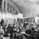
-
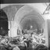
-
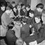
-
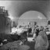
-
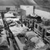
-
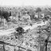
-
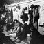
-
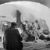
-

-

-
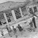
-
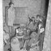
-
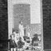